Basketball

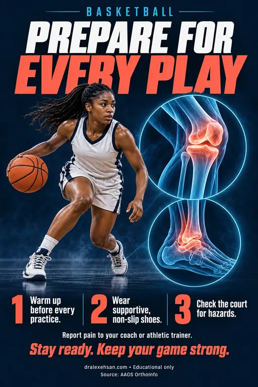
Text and source
Warm up before every practice.
Wear supportive, non-slip shoes.
Check the court for hazards.
Report pain to your coach or athletic trainer.
Stay ready. Keep your game strong.
444 anatomical and athlete safety posters for teens and student athletes. Open an image to view it at full size, or download it for printing.
320 sport-focused posters, 100 injury and body-area topic posters, and 24 general safety designs. These do not replace individual injury assessment or return-to-play clearance. Collection review and listed revisions approved by Alex Ehsan, MD, PhD on September 28, 2026. The topic library contains 1,000 searchable focus entries. Several entries may share one illustrated poster.
444 posters

Warm up before every practice.
Wear supportive, non-slip shoes.
Check the court for hazards.
Report pain to your coach or athletic trainer.
Stay ready. Keep your game strong.
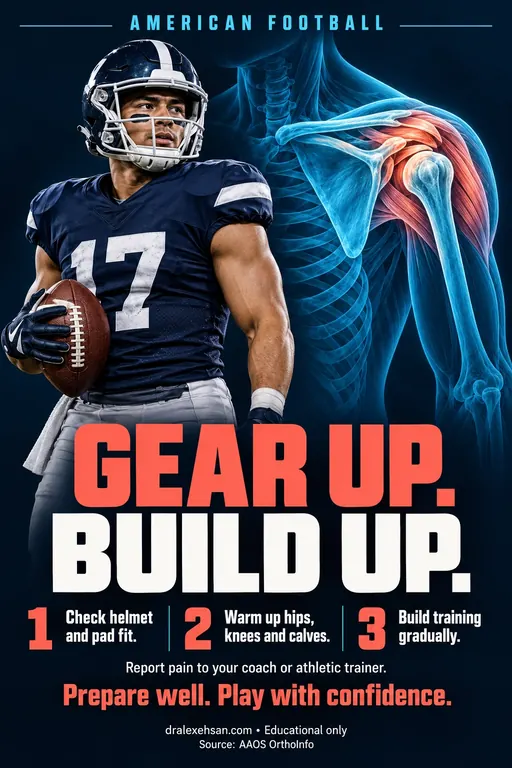
Check helmet and pad fit.
Warm up hips, knees and calves.
Build training gradually.
Report pain to your coach or athletic trainer.
Prepare well. Play with confidence.
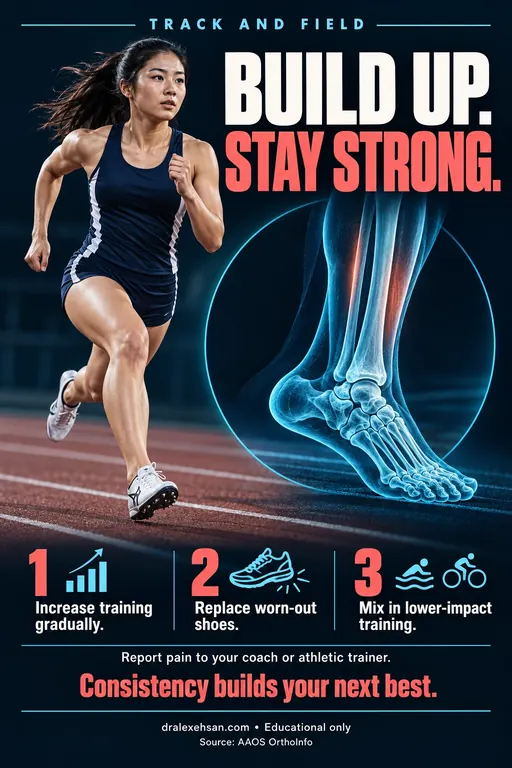
Increase training gradually.
Replace worn-out shoes.
Mix in lower-impact training.
Report pain to your coach or athletic trainer.
Consistency builds your next best.
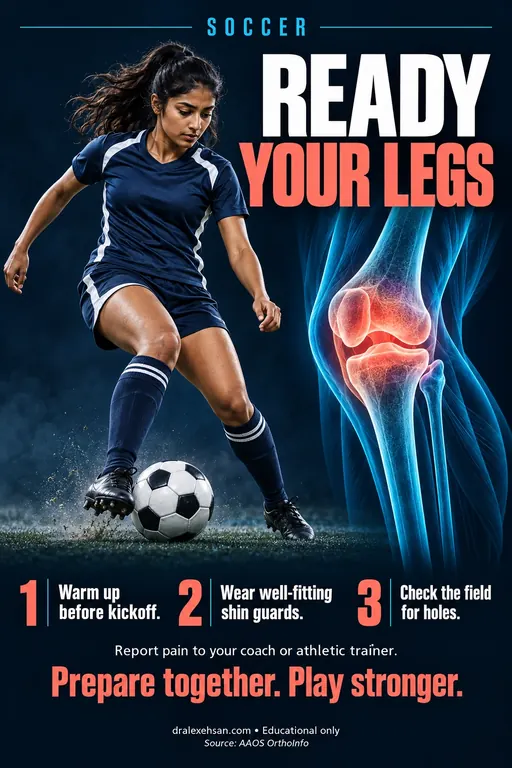
Warm up before kickoff.
Wear well-fitting shin guards.
Check the field for holes.
Report pain to your coach or athletic trainer.
Prepare together. Play stronger.
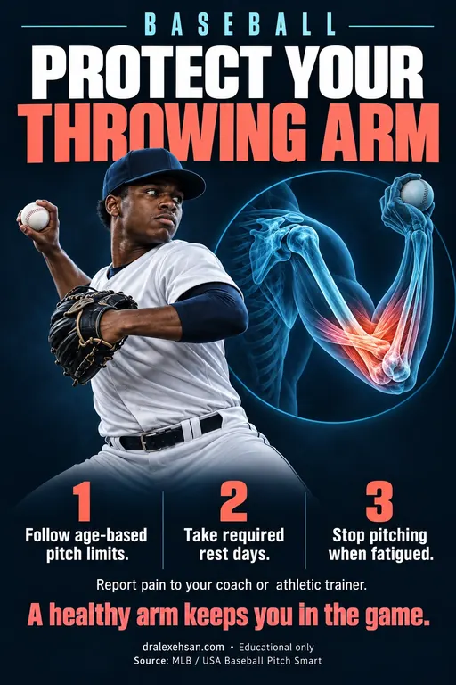
Follow age-based pitch limits.
Take required rest days.
Stop pitching when fatigued.
Report pain to your coach or athletic trainer.
A healthy arm keeps you in the game.
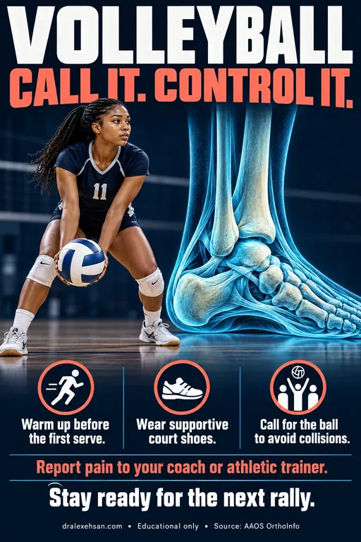
Warm up before the first serve.
Wear supportive court shoes.
Call for the ball to avoid collisions.
Report pain to your coach or athletic trainer.
Stay ready for the next rally.
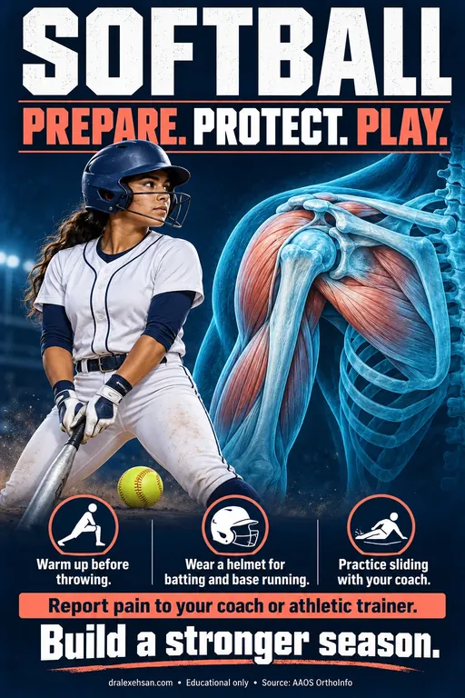
Warm up before throwing.
Wear a helmet for batting and base running.
Practice sliding with your coach.
Report pain to your coach or athletic trainer.
Build a stronger season.
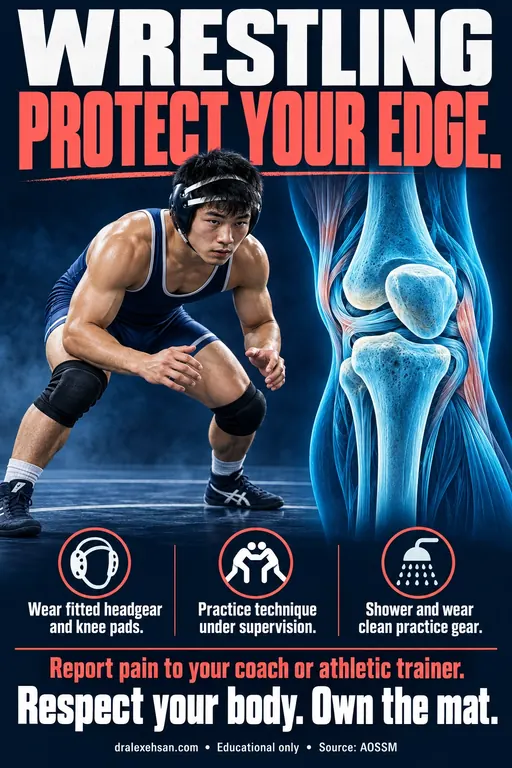
Wear fitted headgear and knee pads.
Practice technique under supervision.
Shower and wear clean practice gear.
Report pain to your coach or athletic trainer.
Respect your body. Own the mat.
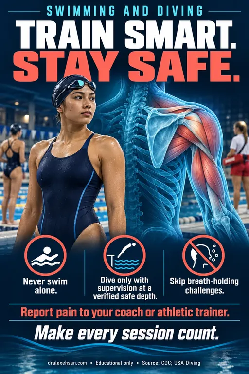
Never swim alone.
Dive only with supervision at a verified safe depth.
Skip breath-holding challenges.
Report pain to your coach or athletic trainer.
Make every session count.
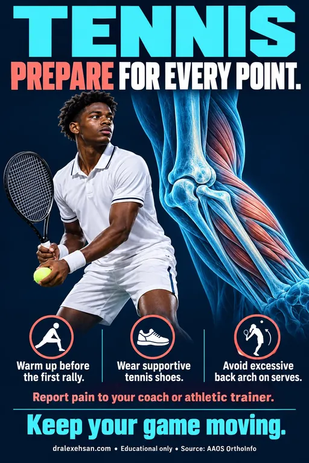
Warm up before the first rally.
Wear supportive tennis shoes.
Avoid excessive back arch on serves.
Report pain to your coach or athletic trainer.
Keep your game moving.
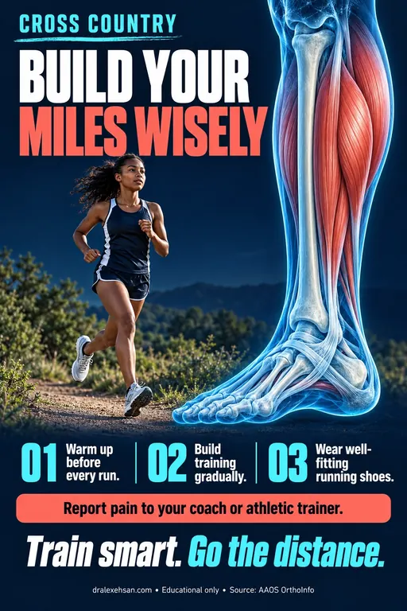
Warm up before every run.
Build training gradually.
Wear well-fitting running shoes.
Report pain to your coach or athletic trainer.
Train smart. Go the distance.
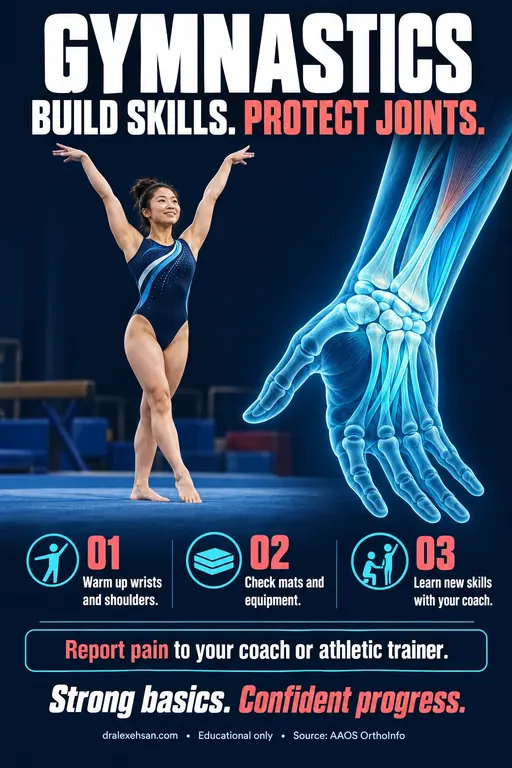
Warm up wrists and shoulders.
Check mats and equipment.
Learn new skills with your coach.
Report pain to your coach or athletic trainer.
Strong basics. Confident progress.
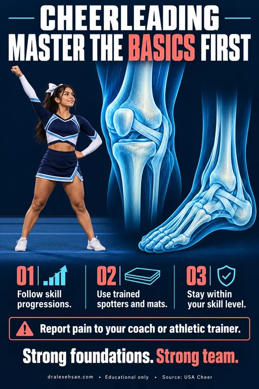
Follow skill progressions.
Use trained spotters and mats.
Stay within your skill level.
Report pain to your coach or athletic trainer.
Strong foundations. Strong team.
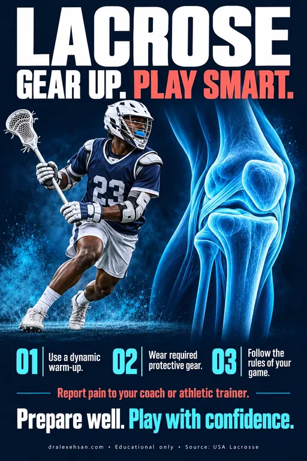
Use a dynamic warm-up.
Wear required protective gear.
Follow the rules of your game.
Report pain to your coach or athletic trainer.
Prepare well. Play with confidence.
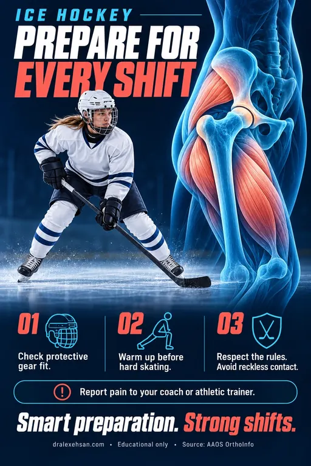
Check protective gear fit.
Warm up before hard skating.
Respect the rules. Avoid reckless contact.
Report pain to your coach or athletic trainer.
Smart preparation. Strong shifts.
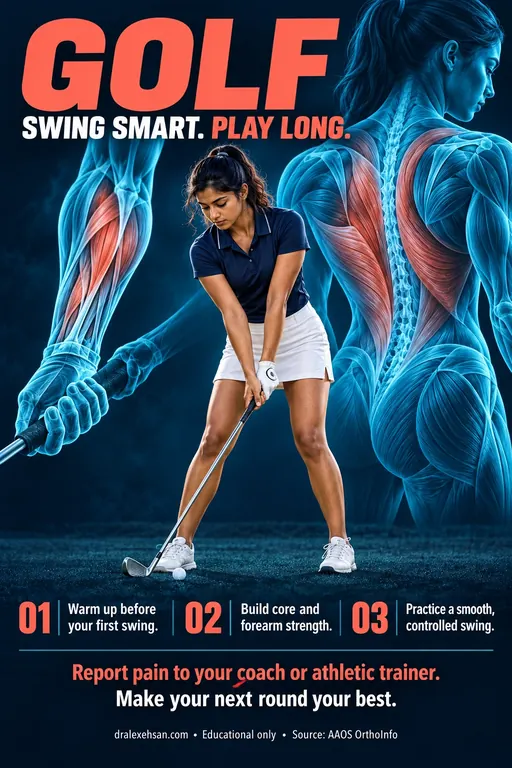
Warm up before your first swing.
Build core and forearm strength.
Practice a smooth, controlled swing.
Report pain to your coach or athletic trainer.
Make your next round your best.
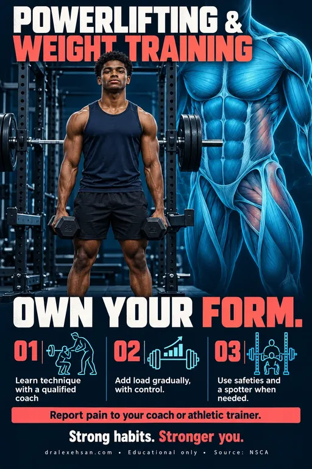
Learn technique with a qualified coach.
Add load gradually, with control.
Use safeties and a spotter when needed.
Report pain to your coach or athletic trainer.
Strong habits. Stronger you.
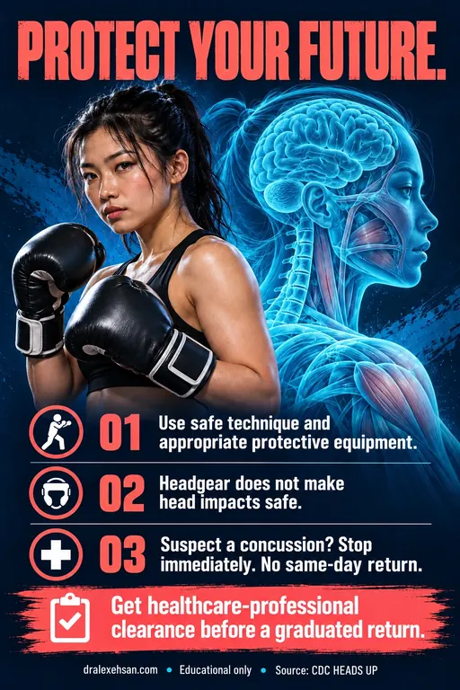
Use safe technique and appropriate protective equipment.
Headgear does not make head impacts safe.
Suspect a concussion? Stop immediately. No same-day return.
Get healthcare-professional clearance before a graduated return.
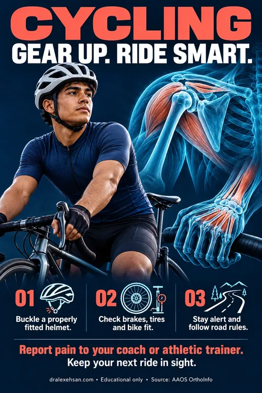
Buckle a properly fitted helmet.
Check brakes, tires and bike fit.
Stay alert and follow road rules.
Report pain to your coach or athletic trainer.
Keep your next ride in sight.
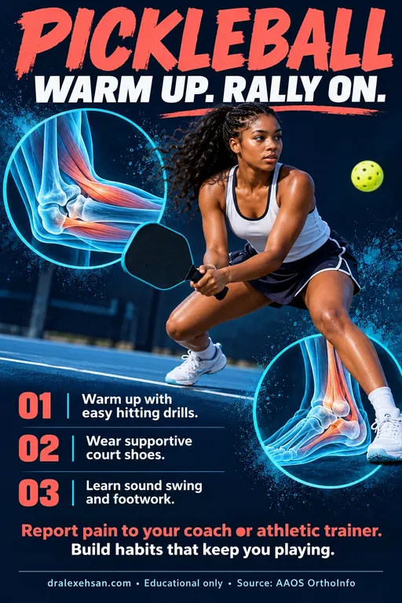
Warm up with easy hitting drills.
Wear supportive court shoes.
Learn sound swing and footwork.
Report pain to your coach or athletic trainer.
Build habits that keep you playing.
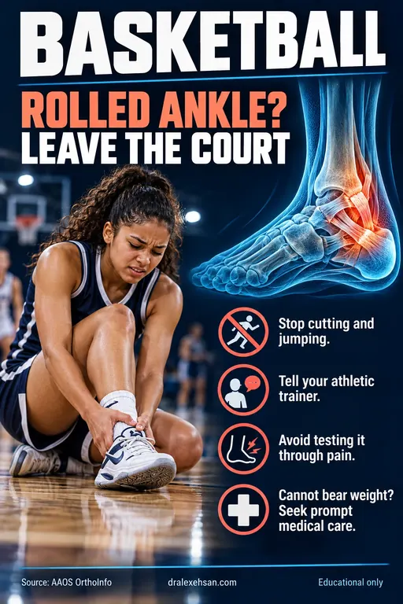
BASKETBALL
ROLLED ANKLE? LEAVE THE COURT
Stop cutting and jumping.
Tell your athletic trainer.
Avoid testing it through pain.
Cannot bear weight? Seek prompt medical care.
Source: AAOS OrthoInfo
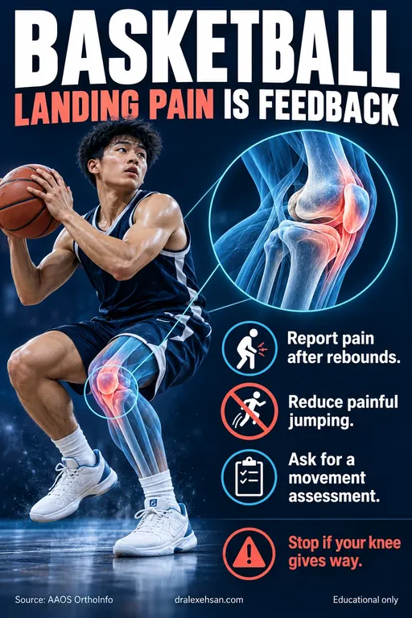
BASKETBALL
LANDING PAIN IS FEEDBACK
Report pain after rebounds.
Reduce painful jumping.
Ask for a movement assessment.
Stop if your knee gives way.
Source: AAOS OrthoInfo
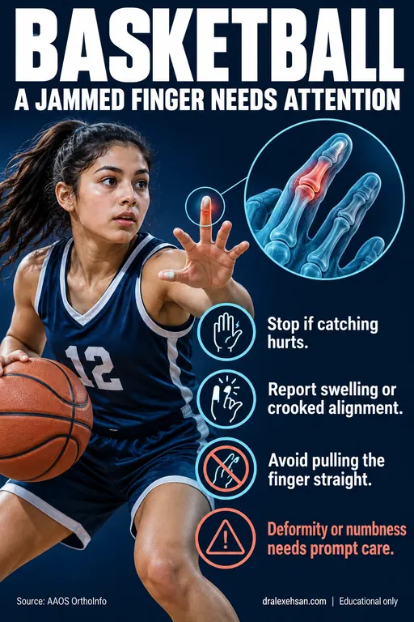
BASKETBALL
A JAMMED FINGER NEEDS ATTENTION
Stop if catching hurts.
Report swelling or crooked alignment.
Avoid pulling the finger straight.
Deformity or numbness needs prompt care.
Source: AAOS OrthoInfo
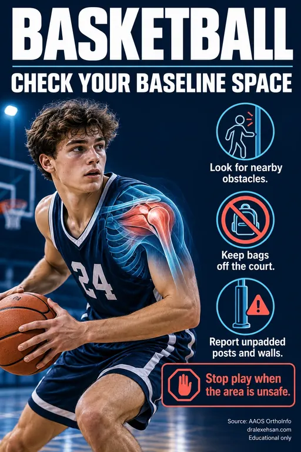
BASKETBALL
CHECK YOUR BASELINE SPACE
Look for nearby obstacles.
Keep bags off the court.
Report unpadded posts and walls.
Stop play when the area is unsafe.
Source: AAOS OrthoInfo
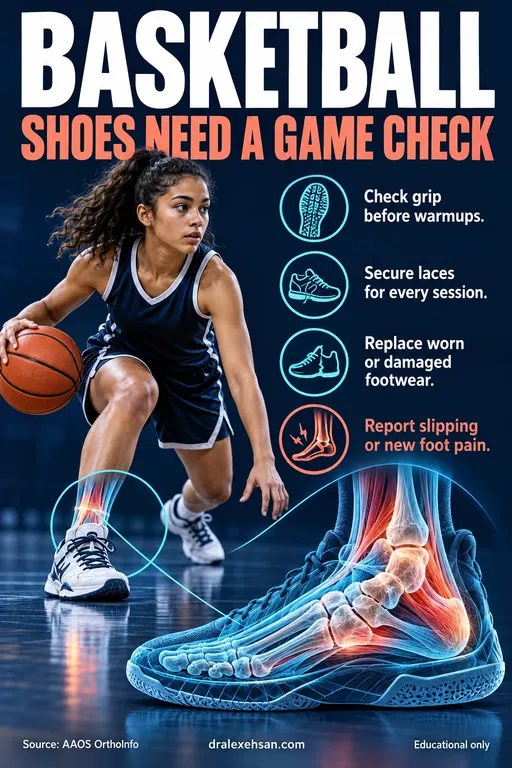
BASKETBALL
SHOES NEED A GAME CHECK
Check grip before warmups.
Secure laces for every session.
Replace worn or damaged footwear.
Report slipping or new foot pain.
Source: AAOS OrthoInfo
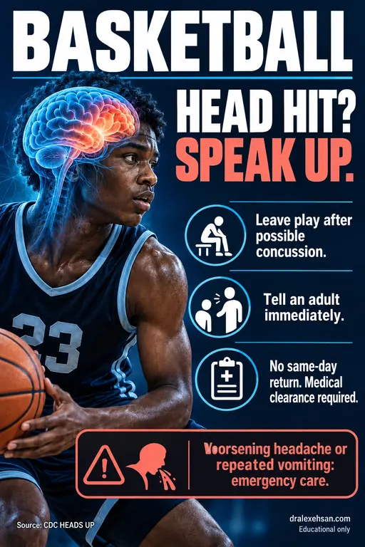
BASKETBALL
HEAD HIT? SPEAK UP
Leave play after possible concussion.
Tell an adult immediately.
No same-day return. Medical clearance required.
Worsening headache or repeated vomiting: emergency care.
Source: CDC HEADS UP
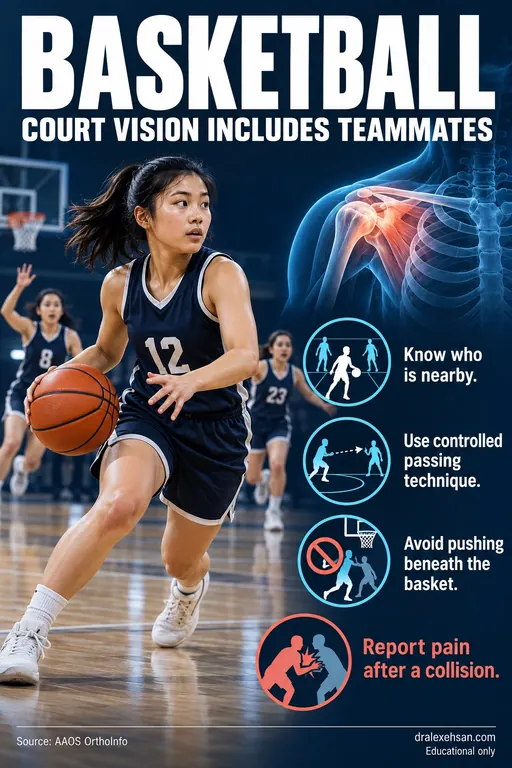
BASKETBALL
COURT VISION INCLUDES TEAMMATES
Know who is nearby.
Use controlled passing technique.
Avoid pushing beneath the basket.
Report pain after a collision.
Source: AAOS OrthoInfo
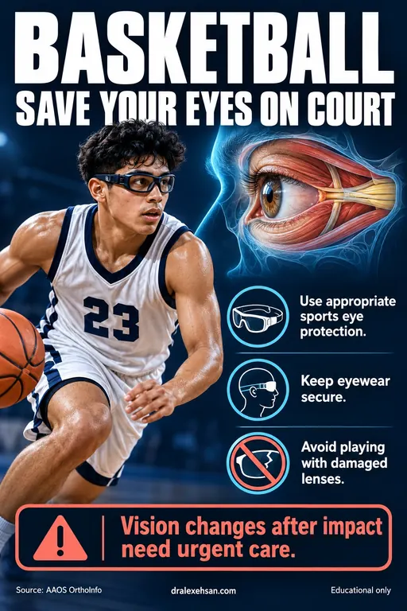
BASKETBALL
SAVE YOUR EYES ON COURT
Use appropriate sports eye protection.
Keep eyewear secure.
Avoid playing with damaged lenses.
Vision changes after impact need urgent care.
Source: AAOS OrthoInfo
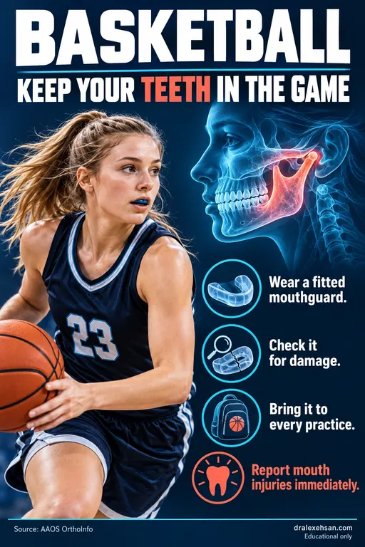
BASKETBALL
KEEP YOUR TEETH IN THE GAME
Wear a fitted mouthguard.
Check it for damage.
Bring it to every practice.
Report mouth injuries immediately.
Source: AAOS OrthoInfo
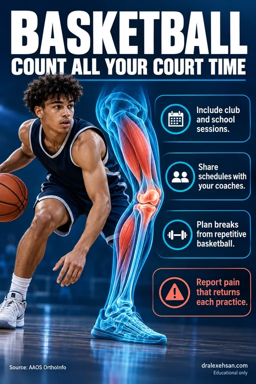
BASKETBALL
COUNT ALL YOUR COURT TIME
Include club and school sessions.
Share schedules with your coaches.
Plan breaks from repetitive basketball.
Report pain that returns each practice.
Source: AAOS OrthoInfo
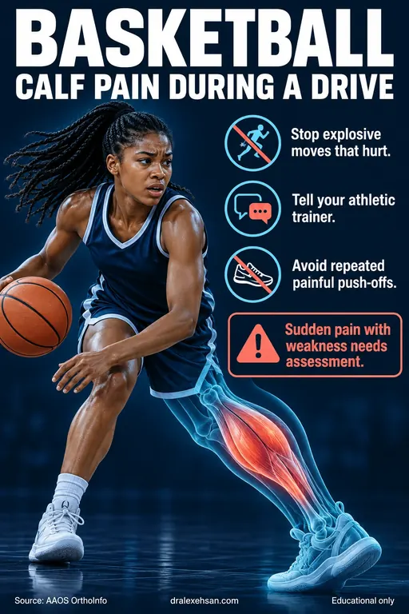
BASKETBALL
CALF PAIN DURING A DRIVE
Stop explosive moves that hurt.
Tell your athletic trainer.
Avoid repeated painful push-offs.
Sudden pain with weakness needs assessment.
Source: AAOS OrthoInfo
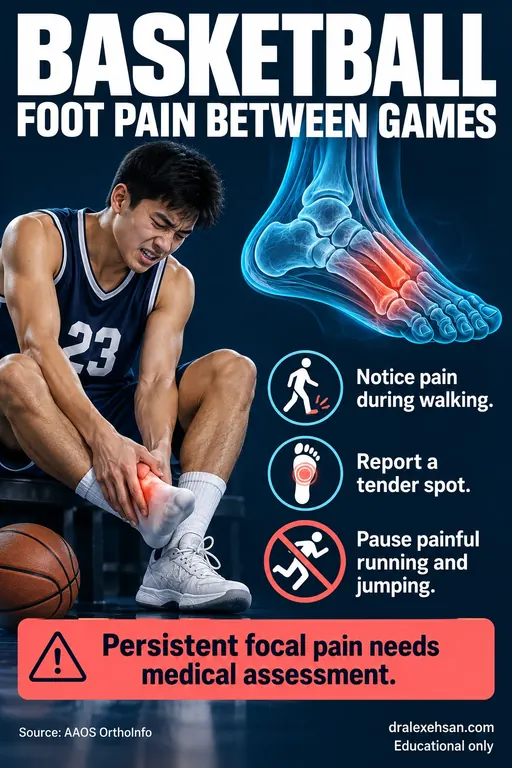
BASKETBALL
FOOT PAIN BETWEEN GAMES
Notice pain during walking.
Report a tender spot.
Pause painful running and jumping.
Persistent focal pain needs medical assessment.
Source: AAOS OrthoInfo
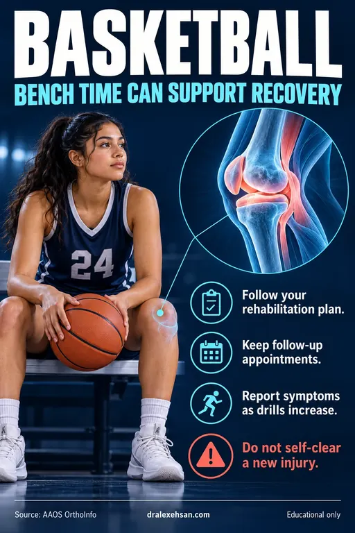
BASKETBALL
BENCH TIME CAN SUPPORT RECOVERY
Follow your rehabilitation plan.
Keep follow-up appointments.
Report symptoms as drills increase.
Do not self-clear a new injury.
Source: AAOS OrthoInfo
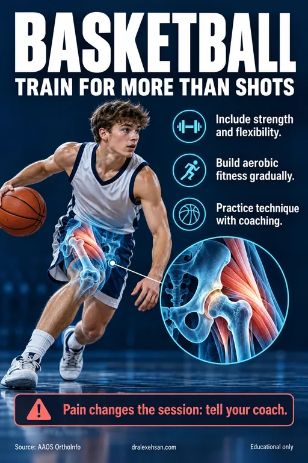
BASKETBALL
TRAIN FOR MORE THAN SHOTS
Include strength and flexibility.
Build aerobic fitness gradually.
Practice technique with coaching.
Pain changes the session: tell your coach.
Source: AAOS OrthoInfo
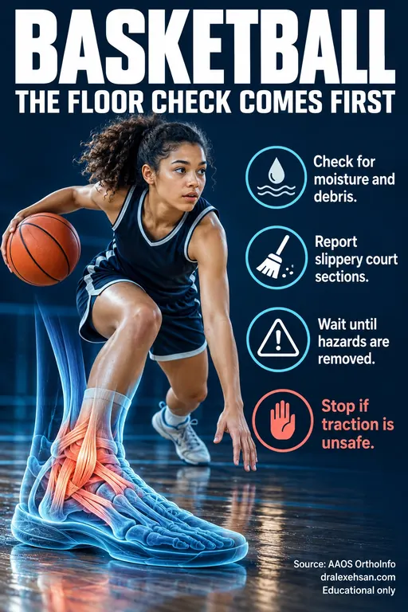
BASKETBALL
THE FLOOR CHECK COMES FIRST
Check for moisture and debris.
Report slippery court sections.
Wait until hazards are removed.
Stop if traction is unsafe.
Source: AAOS OrthoInfo
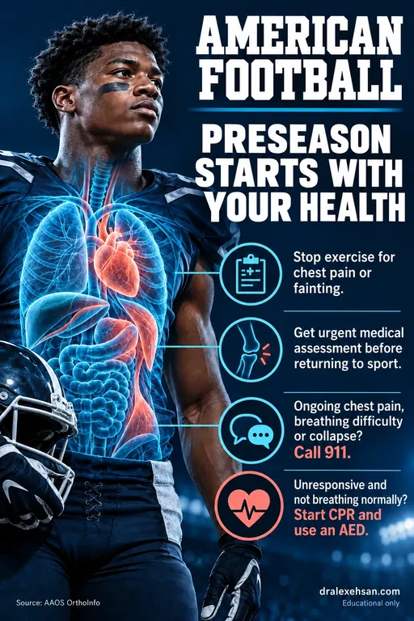
Stop exercise for chest pain or fainting.
Get urgent medical assessment before returning to sport.
Ongoing chest pain, breathing difficulty or collapse? Call 911.
Unresponsive and not breathing normally? Start CPR and use an AED.
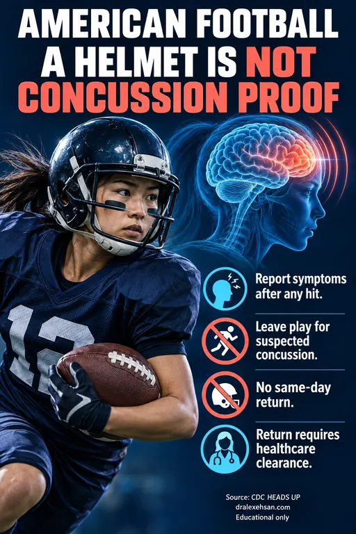
AMERICAN FOOTBALL
A HELMET IS NOT CONCUSSION PROOF
Report symptoms after any hit.
Leave play for suspected concussion.
No same-day return.
Return requires healthcare clearance.
Source: CDC HEADS UP
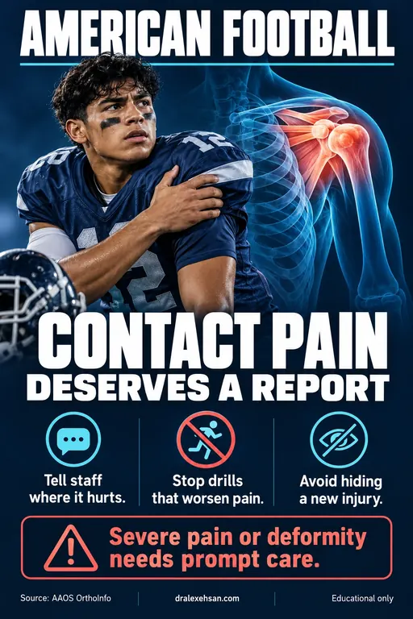
AMERICAN FOOTBALL
CONTACT PAIN DESERVES A REPORT
Tell staff where it hurts.
Stop drills that worsen pain.
Avoid hiding a new injury.
Severe pain or deformity needs prompt care.
Source: AAOS OrthoInfo
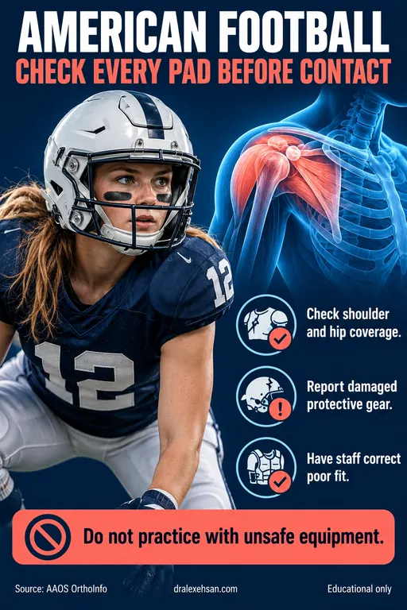
AMERICAN FOOTBALL
CHECK EVERY PAD BEFORE CONTACT
Check shoulder and hip coverage.
Report damaged protective gear.
Have staff correct poor fit.
Do not practice with unsafe equipment.
Source: AAOS OrthoInfo
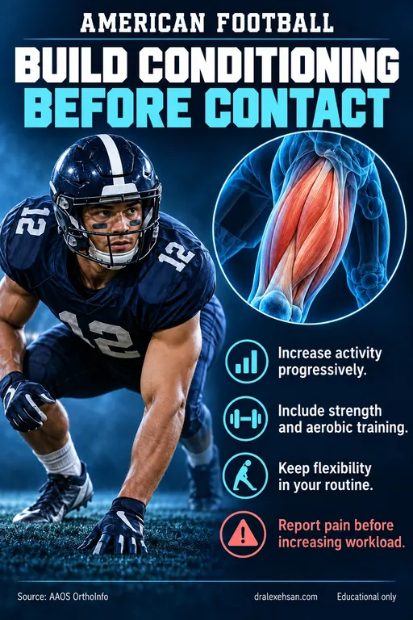
AMERICAN FOOTBALL
BUILD CONDITIONING BEFORE CONTACT
Increase activity progressively.
Include strength and aerobic training.
Keep flexibility in your routine.
Report pain before increasing workload.
Source: AAOS OrthoInfo
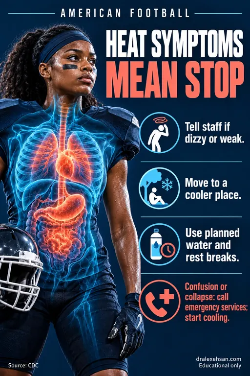
AMERICAN FOOTBALL
HEAT SYMPTOMS MEAN STOP
Tell staff if dizzy or weak.
Move to a cooler place.
Use planned water and rest breaks.
Confusion or collapse: call emergency services; start cooling.
Source: CDC
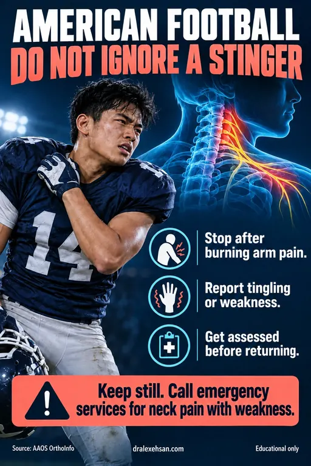
AMERICAN FOOTBALL
DO NOT IGNORE A STINGER
Stop after burning arm pain.
Report tingling or weakness.
Get assessed before returning.
Keep still. Call emergency services for neck pain with weakness.
Source: AAOS OrthoInfo
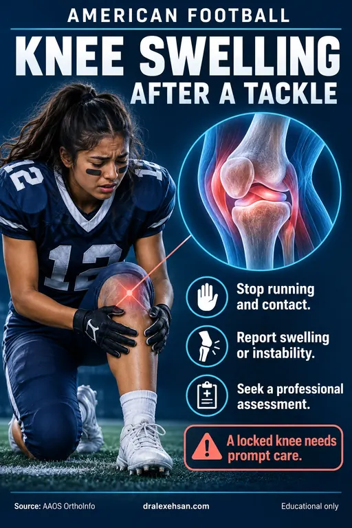
AMERICAN FOOTBALL
KNEE SWELLING AFTER A TACKLE
Stop running and contact.
Report swelling or instability.
Seek a professional assessment.
A locked knee needs prompt care.
Source: AAOS OrthoInfo
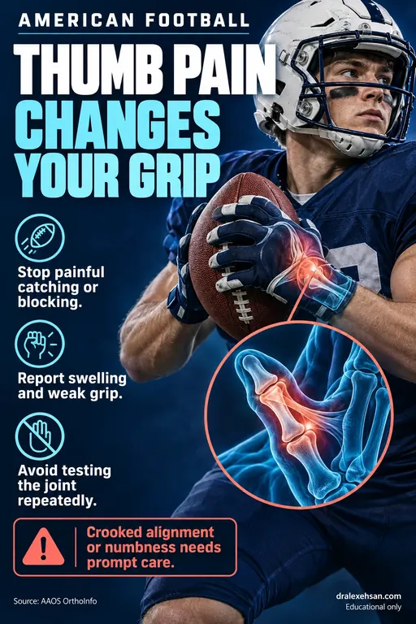
AMERICAN FOOTBALL
THUMB PAIN CHANGES YOUR GRIP
Stop painful catching or blocking.
Report swelling and weak grip.
Avoid testing the joint repeatedly.
Crooked alignment or numbness needs prompt care.
Source: AAOS OrthoInfo
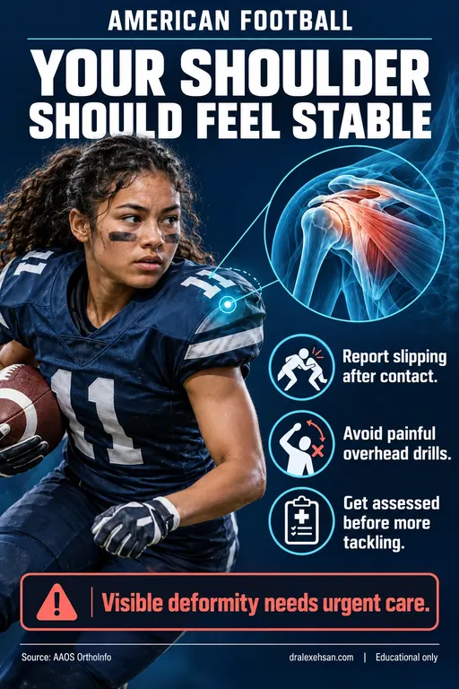
AMERICAN FOOTBALL
YOUR SHOULDER SHOULD FEEL STABLE
Report slipping after contact.
Avoid painful overhead drills.
Get assessed before more tackling.
Visible deformity needs urgent care.
Source: AAOS OrthoInfo
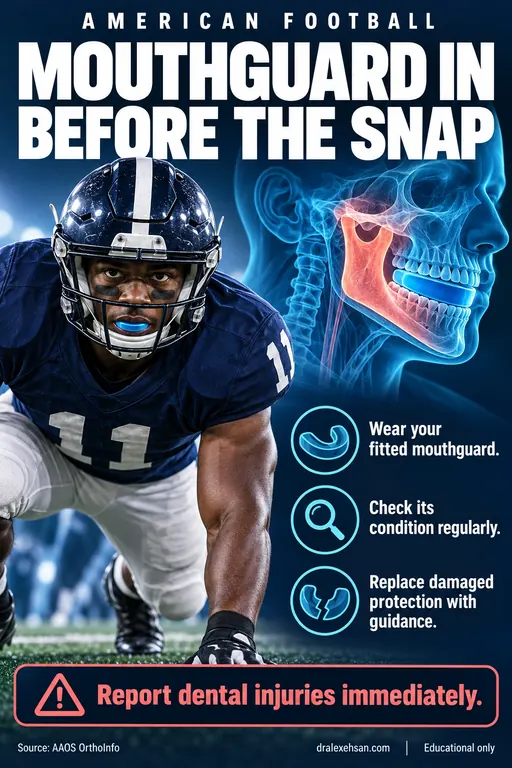
AMERICAN FOOTBALL
MOUTHGUARD IN BEFORE THE SNAP
Wear your fitted mouthguard.
Check its condition regularly.
Replace damaged protection with guidance.
Report dental injuries immediately.
Source: AAOS OrthoInfo
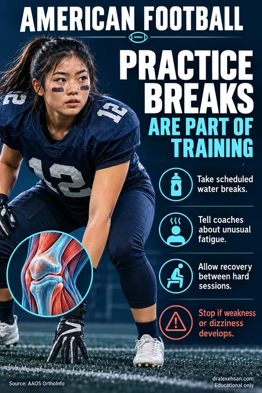
AMERICAN FOOTBALL
PRACTICE BREAKS ARE PART OF TRAINING
Take scheduled water breaks.
Tell coaches about unusual fatigue.
Allow recovery between hard sessions.
Stop if weakness or dizziness develops.
Source: AAOS OrthoInfo
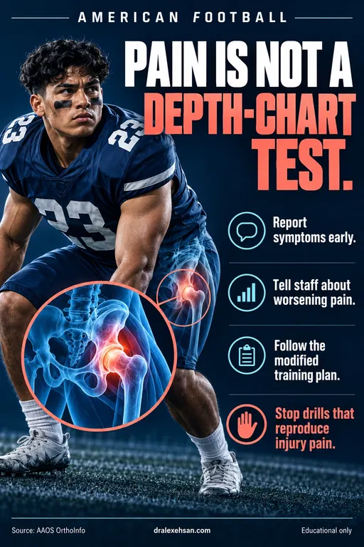
AMERICAN FOOTBALL
PAIN IS NOT A DEPTH-CHART TEST
Report symptoms early.
Tell staff about worsening pain.
Follow the modified training plan.
Stop drills that reproduce injury pain.
Source: AAOS OrthoInfo
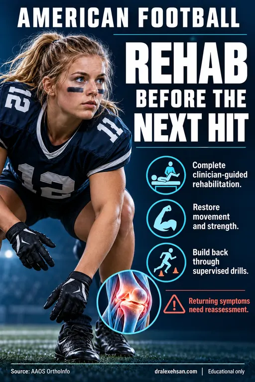
AMERICAN FOOTBALL
REHAB BEFORE THE NEXT HIT
Complete clinician-guided rehabilitation.
Restore movement and strength.
Build back through supervised drills.
Returning symptoms need reassessment.
Source: AAOS OrthoInfo
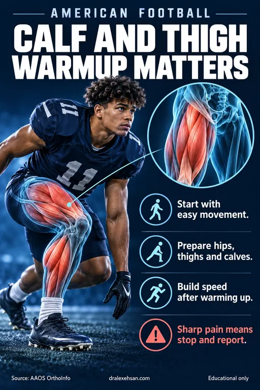
AMERICAN FOOTBALL
CALF AND THIGH WARMUP MATTERS
Start with easy movement.
Prepare hips, thighs and calves.
Build speed after warming up.
Sharp pain means stop and report.
Source: AAOS OrthoInfo
TRACK AND FIELD
ONE SORE SPOT DESERVES ATTENTION
Report focal bone pain.
Pause painful running or jumping.
Seek assessment before more impact.
Pain with walking needs medical review.
Source: AAOS OrthoInfo
TRACK AND FIELD
NEW SEASON, GRADUAL LOAD
Increase training progressively.
Share all sessions with your coach.
Build recovery into the plan.
Report pain that persists between sessions.
Source: AAOS OrthoInfo
TRACK AND FIELD
SPRINT PAIN? END THE REP
Stop after sudden thigh pain.
Tell your coach or trainer.
Avoid testing another maximal sprint.
Weakness or difficulty walking needs assessment.
Source: AAOS OrthoInfo
TRACK AND FIELD
THROWING ARM FATIGUE IS A SIGNAL
Report pain during release.
Avoid throwing through symptoms.
Review technique and workload.
Loss of strength needs assessment.
Source: AAOS OrthoInfo
After a possible concussion, stop participation immediately.
No same-day return.
A healthcare professional must assess the athlete.
Follow a medically guided return to sport.
TRACK AND FIELD
POLE VAULT SAFETY STARTS BELOW
Inspect equipment with your coach.
Keep the landing area clear.
Use supervised skill progressions.
Stop when equipment or conditions are unsafe.
Source: AAOS OrthoInfo
TRACK AND FIELD
JUMP LANDINGS NEED A CLEAR ZONE
Check the landing surface.
Remove debris before attempts.
Follow your coach's landing instruction.
Report pain after an awkward landing.
Source: AAOS OrthoInfo
TRACK AND FIELD
SHIN PAIN IS NOT A GOAL
Tell your coach when pain begins.
Reduce activities that trigger pain.
Get persistent symptoms assessed.
Pain at rest needs medical review.
Source: AAOS OrthoInfo
TRACK AND FIELD
ACHILLES PAIN? ADJUST THE SESSION
Report painful push-offs.
Pause painful sprinting and jumping.
Get professional guidance on loading.
A sudden pop needs prompt assessment.
Source: AAOS OrthoInfo
TRACK AND FIELD
RECOVERY BELONGS ON THE SCHEDULE
Allow breaks from repetitive training.
Vary activities with your coach.
Avoid stacking hard sessions unplanned.
Ongoing soreness needs a workload review.
Source: AAOS OrthoInfo
TRACK AND FIELD
FUEL SUPPORTS STRONG BONES
Eat enough for training demands.
Include varied nutrient-rich foods.
Discuss unexplained fatigue with staff.
Recurrent bone pain needs medical review.
Source: AAOS OrthoInfo
TRACK AND FIELD
DO NOT RACE THROUGH DIZZINESS
Stop and tell meet staff.
Move to a cool safe place.
Use planned hydration breaks.
Confusion or collapse: call emergency services; start cooling.
Source: CDC
TRACK AND FIELD
SPIKES NEED THE RIGHT FIT
Check footwear before sessions.
Replace worn or damaged shoes.
Discuss new foot pressure points.
Report pain that changes your stride.
Source: AAOS OrthoInfo
TRACK AND FIELD
REST PAIN IS NOT NORMAL SORENESS
Report pain outside training.
Explain when symptoms started.
Seek assessment before more loading.
Worsening night pain needs medical review.
Source: AAOS OrthoInfo
TRACK AND FIELD
RETURN TO RUNNING WITH A PLAN
Follow your clinician's progression.
Track symptoms as load increases.
Tell staff if pain returns.
Do not race before medical clearance.
Source: AAOS OrthoInfo
SOCCER
SHIN GUARDS BEFORE KICKOFF
Wear properly fitted shin guards.
Check protection before each session.
Replace damaged guards with guidance.
Report pain after a direct kick.
Source: AAOS OrthoInfo
SOCCER
A FIELD WALK CAN PREVENT A FALL
Look for holes and debris.
Tell staff about surface hazards.
Wait for unsafe areas to clear.
Stop play if the field is unsafe.
Source: AAOS OrthoInfo
SOCCER
GOALPOSTS ARE NOT CLIMBING FRAMES
Avoid climbing or hanging on goals.
Tell staff about unstable goals.
Keep clear until goals are secured.
Stop play around unsecured goals.
Source: AAOS OrthoInfo
SOCCER
DIZZY AFTER A HEADER? LEAVE PLAY
Report symptoms after head contact.
Stop play for suspected concussion.
No same-day return.
Return requires healthcare clearance.
Source: CDC HEADS UP
SOCCER
GROIN PAIN DURING A KICK
Stop painful shooting drills.
Report pain with cutting.
Seek assessment for persistent symptoms.
Difficulty walking needs prompt assessment.
Source: AAOS OrthoInfo
SOCCER
CUTTING SHOULD NOT FEEL UNSTABLE
Report a knee that gives way.
Stop painful changes of direction.
Get swelling assessed before playing.
A locked knee needs prompt care.
Source: AAOS OrthoInfo
SOCCER
GOALKEEPER LANDING PAIN MATTERS
Report wrist pain after a save.
Stop painful diving and catching.
Avoid repeated painful grip tests.
Deformity or numbness needs urgent care.
Source: AAOS OrthoInfo
SOCCER
CLEAT COMFORT IS A SAFETY CHECK
Choose appropriate well-fitting footwear.
Check cleats for damage.
Report new pressure or slipping.
Pain that changes running needs assessment.
Source: AAOS OrthoInfo
SOCCER
TOURNAMENTS ADD UP
Count training and match minutes.
Share all team commitments.
Plan recovery with your coaches.
Persistent soreness needs a workload review.
Source: AAOS OrthoInfo
SOCCER
WARM UP BEFORE THE FIRST SPRINT
Start with easy movement.
Prepare for running and direction changes.
Increase effort progressively.
Stop if sharp pain develops.
Source: AAOS OrthoInfo
Concussion symptoms can appear later.
Report symptoms and stop playing.
No same-day return for suspected concussion.
Get healthcare-professional clearance and follow a graduated return.
SOCCER
DO NOT CHASE THROUGH HAMSTRING PAIN
Stop sprinting when pain starts.
Tell your coach or trainer.
Avoid another maximal-speed test.
Sudden weakness needs professional assessment.
Source: AAOS OrthoInfo
SOCCER
ANKLE GIVING WAY? GET HELP
Report repeated ankle rolling.
Pause painful cutting drills.
Ask about guided balance training.
New swelling needs an injury assessment.
Source: AAOS OrthoInfo
SOCCER
HEAT CAN CHANGE THE MATCH PLAN
Take scheduled cooling breaks.
Tell staff when unusually weak.
Move to shade when symptoms start.
Confusion or collapse: call emergency services; start cooling.
Source: CDC
SOCCER
PLAY THE BALL WITH CONTROL
Avoid reckless contact.
Follow rules and referee guidance.
Keep awareness of nearby players.
Report injuries after a collision.
Source: AAOS OrthoInfo
Know your emergency action plan.
Unresponsive and not breathing normally? Call 911.
Start CPR and use an AED.
Follow the emergency dispatcher’s instructions.
Inner elbow pain needs attention
Stop painful throws
Tell your athletic trainer
Stop for pain. Tell your coach or trainer.
Watch for falling throwing accuracy
Report unusual arm heaviness
End pitching when fatigue appears
Stop for pain. Tell your coach or trainer.
Share pitching records across teams
Avoid overlapping pitching commitments
Follow age-based recovery rules
Stop for pain. Tell your coach or trainer.
Report pain behind the kneecap
Discuss squat workload with your coach
Follow your rehabilitation plan
Stop for pain. Tell your coach or trainer.
Wear helmets in the on-deck circle
Keep helmets on while running bases
Check fit before batting
Stop for pain. Tell your coach or trainer.
Secure mask and throat protection
Wear chest and shin guards
Check gear before receiving pitches
Stop for pain. Tell your coach or trainer.
Know your league's obstruction rules
Avoid blocking runners without possession
Practice safe fielding positions
Stop for pain. Tell your coach or trainer.
Practice with qualified coaching
Begin drills on a sliding bag
Use appropriate breakaway bases
Stop for pain. Tell your coach or trainer.
Look for holes and loose debris
Report hazards before warm-ups
Check space near fences
Stop for pain. Tell your coach or trainer.
Leave room for your toes
Check soles for wear
Break in cleats before games
Stop for pain. Tell your coach or trainer.
Follow a clinician-guided throwing plan
Increase workload gradually
Report returning shoulder or elbow pain
Stop for pain. Tell your coach or trainer.
Notice reduced throwing strength
Stop throws that cause pain
Arrange an injury assessment
Stop for pain. Tell your coach or trainer.
Schedule breaks from baseball
Include other physical activities
Discuss total workload with coaches
Stop for pain. Tell your coach or trainer.
Complete your sports physical
Share previous injuries
Discuss symptoms before competition
Stop for pain. Tell your coach or trainer.
Start with easy running
Prepare shoulders and hips
Progress to controlled practice throws
Stop for pain. Tell your coach or trainer.
Track pitching across practices and games
Build workloads gradually
Report front-of-shoulder pain
Stop for pain. Tell your coach or trainer.
Include catcher throws in workload discussions
Notice shoulder fatigue
Stop painful overhead throws
Stop for pain. Tell your coach or trainer.
Check helmet face-shield attachment
Wear properly fitted batting protection
Replace damaged protective equipment
Stop for pain. Tell your coach or trainer.
Learn your league's base-running rules
Use the correct first-base portion
Practice routes with your coach
Stop for pain. Tell your coach or trainer.
Look for divots before practice
Remove loose debris safely
Report unsafe playing surfaces
Stop for pain. Tell your coach or trainer.
Report pain during catcher squats
Avoid pushing through painful repetitions
Ask about modifying your workload
Stop for pain. Tell your coach or trainer.
Tell someone when arm pain returns
Pause painful throws
Get assessed before increasing effort
Stop for pain. Tell your coach or trainer.
Learn technique before game situations
Practice on an appropriate sliding surface
Check bases with your coach
Stop for pain. Tell your coach or trainer.
Discuss batter elbow and shin protection
Check fit before stepping in
Use equipment correctly
Stop for pain. Tell your coach or trainer.
Follow obstruction rules
Avoid standing in a runner's path
Practice safe receiving positions
Stop for pain. Tell your coach or trainer.
Coordinate schedules across teams
Include breaks from softball
Vary your physical activities
Stop for pain. Tell your coach or trainer.
Begin with gentle whole-body movement
Prepare shoulders and trunk
Increase throwing effort gradually
Stop for pain. Tell your coach or trainer.
Check toe space as you grow
Inspect traction and shoe wear
Try new cleats before games
Stop for pain. Tell your coach or trainer.
Follow your clinician's rehabilitation guidance
Rebuild throwing volume gradually
Report renewed pain or swelling
Stop for pain. Tell your coach or trainer.
Use a proper catcher's mitt
Secure helmet, mask and throat guard
Wear chest protector and shin guards
Stop for pain. Tell your coach or trainer.
Count repeated serving and spiking
Plan recovery between hard sessions
Report overhead shoulder pain
Stop for pain. Tell your coach or trainer.
Stop if the finger looks crooked
Avoid pulling it straight yourself
Get prompt medical assessment
Stop for pain. Tell your coach or trainer.
Report pain and swelling
Avoid testing it with repeated jumps
Get assessed before returning
Stop for pain. Tell your coach or trainer.
Choose well-fitting knee pads
Check padding for damage
Wear them for dives and falls
Stop for pain. Tell your coach or trainer.
Consider padded defensive clothing
Cover vulnerable areas during floor drills
Report painful abrasions
Stop for pain. Tell your coach or trainer.
Check overhead obstructions
Report low fixtures or equipment
Use a clear playing space
Stop for pain. Tell your coach or trainer.
Check exposed support wires
Ask staff to cover hazards
Keep clear of unsafe supports
Stop for pain. Tell your coach or trainer.
Keep body weight off supports
Avoid grabbing the net
Report unstable equipment
Stop for pain. Tell your coach or trainer.
Check sand for sharp objects
Report glass and hidden hazards
Use a safe cleared playing area
Stop for pain. Tell your coach or trainer.
Combine strength and aerobic training
Include comfortable mobility work
Increase activity gradually
Stop for pain. Tell your coach or trainer.
Discuss schedules across teams
Include breaks from volleyball
Vary training throughout the year
Stop for pain. Tell your coach or trainer.
Choose supportive volleyball shoes
Check cushioning and traction
Replace worn-out footwear
Stop for pain. Tell your coach or trainer.
Ask about support after ankle injuries
Choose properly fitting equipment
Keep rehabilitation part of your plan
Stop for pain. Tell your coach or trainer.
Report lingering joint swelling
Restore movement and strength with guidance
Follow your clinician's return plan
Stop for pain. Tell your coach or trainer.
Use sunscreen as directed
Wear appropriate sun-protective clothing
Plan breaks in shaded areas
Stop for pain. Tell your coach or trainer.
Report pain with gripping
Reduce painful racket activity
Seek assessment for persistent symptoms
Stop for pain. Tell your coach or trainer.
Ask a professional about racket fit
Choose a comfortable handle size
Report pain during gripping
Stop for pain. Tell your coach or trainer.
Avoid excessive back arching
Use coached serving technique
Stop serves that provoke pain
Stop for pain. Tell your coach or trainer.
Practice balanced movement with coaching
Build leg strength gradually
Report pain during landing
Stop for pain. Tell your coach or trainer.
Choose tennis-specific support
Check worn tread before matches
Replace unstable footwear
Stop for pain. Tell your coach or trainer.
Remove stray balls from playing areas
Check the court before rallies
Pause play for surface hazards
Stop for pain. Tell your coach or trainer.
Check surface conditions
Avoid playing on slippery areas
Tell staff about standing water
Stop for pain. Tell your coach or trainer.
Stop after sudden calf pain
Avoid pushing through painful push-offs
Get assessed before resuming play
Stop for pain. Tell your coach or trainer.
Report heel-cord pain or stiffness
Reduce painful running and jumping
Seek assessment for persistent symptoms
Stop for pain. Tell your coach or trainer.
Pause strokes that trigger pain
Review technique with your coach
Get persistent pain assessed
Stop for pain. Tell your coach or trainer.
Stop painful overhead strokes
Discuss serving volume with your coach
Seek care for recurring symptoms
Stop for pain. Tell your coach or trainer.
Start with manageable sessions
Increase practice demands gradually
Include recovery between hard efforts
Stop for pain. Tell your coach or trainer.
Begin with light movement
Prepare legs, trunk and shoulders
Build toward controlled practice strokes
Stop for pain. Tell your coach or trainer.
Vary your physical activities
Avoid year-round repetitive overload
Discuss fatigue with your coach
Stop for pain. Tell your coach or trainer.
Follow your clinician's return plan
Rebuild movement and strength
Report pain when strokes resume
Stop for pain. Tell your coach or trainer.
Unresponsive and not breathing normally? Suspect arrest
Call 911; send someone for an AED
Start CPR; follow dispatcher and AED instructions
Activate emergency help immediately.
Warm, swollen skin needs attention.
Do not squeeze draining sores.
Get prompt care before close contact.
Stop and report skin changes immediately.
Report suspicious skin sores or drainage.
Covering an active infection does not make contact sport safe.
Get clinical assessment and follow participation rules.
Do not share towels or personal equipment.
Keep towels and razors personal.
Wash practice clothing after use.
Dry gear following care labels.
Report suspected infection to your athletic trainer.
Wash hands after shared equipment.
Shower after wrestling practice.
Avoid sharing bar soap.
Report painful, spreading skin redness promptly.
Use fitted protective knee pads.
Reduce repeated pressure on sore knees.
Swelling over your kneecap needs assessment.
Stop and report a swollen, painful knee.
A finger that won't bend needs assessment.
Stop gripping and protect the hand.
Do not force the finger straight.
Report lost finger movement promptly.
Check ear protection for a secure fit.
Painful ear swelling needs prompt assessment.
Do not drain an injured ear yourself.
Stop contact and tell your athletic trainer.
Avoid dehydration to make weight.
Plan weight goals with qualified professionals.
Fuel and hydrate for training demands.
Report dizziness or weakness during weight changes.
A slipping shoulder needs medical assessment.
Stop painful holds and weight-bearing drills.
Follow your prescribed rehabilitation plan.
Stop wrestling when the shoulder gives way.
Stop after neck pain with tingling.
Weakness after contact needs urgent help.
Keep still; let trained responders assess.
Suspected spine injury? Call emergency services.
Suspect a concussion? Stop participation.
No same-day return. Get medical assessment.
Return only with healthcare-professional clearance.
Follow a graduated return to sport.
Catching or swelling deserves an assessment.
Avoid forcing a painful deep stance.
Share when symptoms began.
Stop wrestling if your knee locks.
Follow your clinician's return plan.
Restore movement and strength before contact.
Report symptoms during progressive wrestling drills.
Stop drills when injury symptoms return.
Tell coaches about all wrestling sessions.
Build recovery into your training week.
Discuss persistent aches before adding sessions.
Report pain that changes your wrestling.
Learn technique with qualified coaching.
Match practice intensity to skill level.
Use protective gear during supervised practice.
Stop when a drill feels unsafe.
Strengthen shoulders and upper back.
Use a supervised conditioning plan.
Report pain during overhead work.
Stop painful training and tell your coach.
Repeated strokes can overload shoulder tissues.
Tell your coach which strokes hurt.
Get persistent pain assessed before more volume.
Stop strokes that trigger shoulder pain.
Report slipping or giving-way sensations.
Avoid movements that provoke instability.
Follow prescribed shoulder rehabilitation.
Stop swimming when your shoulder gives way.
Use only designated diving areas.
Verify clear water and approved depth.
Follow facility rules and coach supervision.
Stop if diving conditions are uncertain.
Wait until the board is clear.
Keep the landing area clear.
Move away after entering the water.
Report unsafe board or pool conditions.
Tell your coach when you feel ill.
Avoid vigorous swimming with fever.
Ask about returning after an infection.
Stop and report worsening illness symptoms.
Fatigue can undermine water safety.
Exit safely when unusually exhausted.
Tell your coach before continuing.
Stop swimming if you feel unwell.
Do not hyperventilate before going underwater.
Avoid prolonged underwater breath-holding.
Practice breathing skills with qualified supervision.
Stop and report dizziness immediately.
For natural-water activities, children and teens should wear a properly fitted, approved life jacket.
Use close supervision and a buddy.
Swimming ability does not replace these precautions.
Inflatable toys are not life jackets.
Some medicines impair balance and judgment.
Ask your clinician about water safety.
Avoid swimming when medication makes you drowsy.
Report dizziness or unusual sleepiness.
Discuss seizure-related risks with your clinician.
Arrange one-to-one supervision around water.
Share your emergency plan with the supervisor.
Report symptoms before entering the water.
Dry outer ears after swimming.
Tilt your head to drain water.
Keep objects out of ear canals.
Report ear pain, drainage or reduced hearing.
Keep infected wounds out of shared water.
Follow your clinician's wound-care advice.
Ask when pool use is safe again.
Report suspected skin infection promptly.
Report headache, confusion or dizziness.
Leave practice after suspected concussion.
Medical clearance guides your return.
Stop swimming; no same-day concussion return.
When thunder roars, go indoors.
Use a substantial building or enclosed hard-top vehicle.
Wait at least 30 minutes after the last thunder before resuming.
Hear thunder again? Restart the clock.
Localized foot pain can signal bone stress.
Pause impact training while seeking assessment.
Do not test pain with extra running.
Stop running with persistent focal pain.
Introduce unfamiliar running surfaces gradually.
Tell your coach about route changes.
Watch for new foot or shin pain.
Report pain that builds with each run.
Follow your clinician's loading restrictions.
Resume running only when medically cleared.
Build frequency, duration and speed gradually.
Stop if bone pain returns.
Abrupt intensity changes can overload shins.
Pause running that provokes symptoms.
Get persistent shin pain assessed.
Stop when shin pain alters your stride.
Discuss lower-impact sessions with your coach.
Vary activities to reduce repetitive loading.
Keep recovery workouts within your care plan.
Report pain during cross-training.
Try shoes with your running socks.
Allow toe room and a secure heel.
Replace shoes when support wears down.
Report shoe pain before it changes stride.
Check heat conditions before practice.
Choose cooler times when possible.
Plan shade, breaks and fluid access.
Stop and report heat symptoms.
Tell someone about dizziness or nausea.
Stop running and move somewhere cool.
Get help if symptoms persist or worsen.
Collapse or confusion? Call emergency services; start cooling.
Review local air-quality conditions.
Adjust outdoor training when pollution is high.
Follow your asthma or breathing-care plan.
Stop and report unusual breathing difficulty.
Run with a partner when possible.
Tell someone your planned route.
Carry identification and a way to call.
Stop and seek help when unsafe.
Wear reflective running gear.
Choose familiar routes away from traffic.
Stay aware of your surroundings.
Stop when visibility makes running unsafe.
Choose layers suited to the weather.
Cover exposed hands, ears and neck.
Change plans when conditions become unsafe.
Report numbness or uncontrolled shivering.
Look ahead for holes and loose footing.
Slow down on uncertain ground.
Tell teammates about course hazards.
Stop after a painful twist or fall.
Stop ascent if altitude symptoms develop.
Confusion, trouble walking or breathlessness at rest? Get emergency help.
Arrange urgent assisted descent when safe.
Never descend alone.
Stop the run when familiar pain returns.
Discuss lower intensity and more recovery.
Build back under your clinician's guidance.
Report recurring pain before the next workout.
Repeated hand loading can stress growing wrists.
Pause painful weight-bearing skills.
Get persistent wrist pain assessed.
Stop tumbling through wrist pain.
Report elbow catching, swelling or pain.
Do not force a stuck elbow.
Pause painful skills until assessed.
Stop bar work with new elbow symptoms.
Repeated extension can stress the lower back.
Avoid skills that reproduce back pain.
Persistent pain needs medical assessment.
Stop painful back-bending drills.
Look for gaps and unsecured mats.
Confirm mats cover the landing area.
Ask staff to fix unsafe setups.
Stop practice until the landing zone is safe.
Confirm strength and skill prerequisites.
Use the coach's learning progression.
Ask about spotting and training aids.
Stop if you are not ready.
Use trained supervision for challenging skills.
Confirm the spotting plan before starting.
Wait until your coach is ready.
Stop when safe supervision is unavailable.
Inspect palms after bar training.
Use properly fitted grips when appropriate.
Tell your coach about torn skin.
Stop when hand pain compromises your grip.
Wear fitted gymnastics practice clothing.
Avoid loose fabric around apparatus.
Check gear before each event.
Report clothing or equipment hazards.
Raise body temperature with easy movement.
Prepare wrists, shoulders, hips and ankles.
Use gentle stretches after warming up.
Stop stretching if it causes pain.
Swelling near a joint needs attention.
Pain after a fall may involve bone.
Avoid further loading until assessed.
Report persistent joint pain promptly.
Count club and extra practice together.
Build rest into your training plan.
Tell coaches about ongoing soreness.
Stop adding work when pain persists.
Restore joint movement and strength.
Follow medical clearance and skill progressions.
Report pain or swelling during the build-up.
Stop if injury symptoms return.
Report dizziness, headache or confusion.
Get assessed after a suspected concussion.
Medical clearance guides return to skills.
Stop gymnastics; no same-day concussion return.
Keep fluids accessible during practice.
Use planned breaks between apparatus rotations.
Tell your coach about unusual fatigue.
Stop and report dizziness or weakness.
Localized foot pain may signal bone stress.
Pause landings that reproduce the pain.
Ask a clinician about safe activity.
Stop impact skills with persistent foot pain.
Call emergency services immediately.
Do not move the athlete unnecessarily.
Follow dispatcher instructions; await trained responders.
Stop play. Keep others clear.
Practice low jumps before complex skills
Land with hips and knees bending
Keep landing space clear
Stop and report symptoms to your athletic trainer.
Stop tumbling when wrists hurt
Report swelling or lost motion
Resume loading with professional guidance
Stop and report symptoms to your athletic trainer.
Tell your coach when fatigue builds
Pause before technique breaks down
Rehearse again only when ready
Stop and report symptoms to your athletic trainer.
Inspect seams and damaged padding
Clear bags from practice space
Report unsafe surfaces before starting
Stop and report symptoms to your athletic trainer.
Use trained, attentive spotters
Review roles before each skill
Practice under qualified supervision
Stop and report symptoms to your athletic trainer.
Stop jumps after an ankle injury
Report swelling or trouble walking
Get assessed before more impact
Stop and report symptoms to your athletic trainer.
Follow your prescribed rehabilitation plan
Restore balance before harder skills
Report repeated giving way
Stop and report symptoms to your athletic trainer.
Stop painful backbends and tumbling
Tell your athletic trainer promptly
Avoid forcing flexibility through pain
Stop and report symptoms to your athletic trainer.
Report pain when lifting teammates
Avoid painful overhead loading
Rebuild strength with professional guidance
Stop and report symptoms to your athletic trainer.
Headache or dizziness can signal concussion
Stop cheer after suspected concussion
Get assessed by a healthcare professional
No same-day return; healthcare clearance required.
Report localized foot or shin pain
Stop repeated painful landings
Avoid sudden increases in impact
Stop and report symptoms to your athletic trainer.
Increase practice demands gradually
Include recovery between hard sessions
Report pain that keeps returning
Stop and report symptoms to your athletic trainer.
Warm up before flexibility work
Use controlled comfortable movements
Never force a painful stretch
Stop and report symptoms to your athletic trainer.
Report pain that changes your landing
Reduce painful jumping
Get guidance before harder routines
Stop and report symptoms to your athletic trainer.
Follow your clinician's return plan
Rebuild basic skills before complex routines
Report symptoms during progression
Stop and report symptoms to your athletic trainer.
Wear current compliant chest protection
Check fit before taking shots
Replace damaged protective gear
Stop and report symptoms to your athletic trainer.
Wear required certified protective eyewear
Check straps and lenses for damage
Use equipment for your game
Stop and report symptoms to your athletic trainer.
Wear your required mouthguard
Check fit before drills begin
Replace damaged mouthguards
Stop and report symptoms to your athletic trainer.
Use a properly fitted certified helmet
Fasten the chin strap correctly
Report loose or damaged parts
Stop and report symptoms to your athletic trainer.
Practice controlled deceleration
Build cutting speed gradually
Keep knees aligned during landing
Stop and report symptoms to your athletic trainer.
Report pain during passing or shooting
Reduce painful repetitions
Build strength with qualified guidance
Stop and report symptoms to your athletic trainer.
Stop play after painful hand impact
Report swelling or lost grip
Get assessed before returning
Stop and report symptoms to your athletic trainer.
Stop if walking or cutting hurts
Report swelling and instability
Seek evaluation before more play
Stop and report symptoms to your athletic trainer.
Report headache, dizziness or confusion
Leave play after suspected concussion
Get assessed by a healthcare professional
No same-day return; healthcare clearance required.
Use a helmet and throat protector
Wear padded gloves and required protection
Check gear before every session
Stop and report symptoms to your athletic trainer.
Look for holes and loose debris
Report slick or uneven areas
Keep sidelines clear of equipment
Stop and report symptoms to your athletic trainer.
Know rules for your competition
Avoid dangerous stick contact
Report unsafe play to officials
Stop and report symptoms to your athletic trainer.
Increase conditioning gradually
Mix demanding days with recovery
Report focal shin or foot pain
Stop and report symptoms to your athletic trainer.
Stop painful cutting and sprinting
Report groin pain early
Avoid forcing a painful stretch
Stop and report symptoms to your athletic trainer.
Follow your clinician's progression
Restore strength and sport skills
Report symptoms during practice
Stop and report symptoms to your athletic trainer.
Wear required neck laceration protection
Check coverage and secure fit
Replace damaged protective gear
Stop and report symptoms to your athletic trainer.
Stay aware near the boards
Never check from behind
Follow contact rules for your level
Stop and report symptoms to your athletic trainer.
Report pain during push-off
Stop painful skating drills
Rebuild gradually with professional guidance
Stop and report symptoms to your athletic trainer.
Choose skates that fit correctly
Check for painful pressure spots
Report numbness or persistent foot pain
Stop and report symptoms to your athletic trainer.
Report dizziness after contact
Leave play if concussion is suspected
Get assessed before returning
No same-day return; healthcare clearance required.
Use required helmet and face protection
Fasten straps before stepping on ice
Replace cracked or damaged components
Stop and report symptoms to your athletic trainer.
Stop after a painful shoulder impact
Report weakness or changed shoulder shape
Do not force the shoulder back
Stop and report symptoms to your athletic trainer.
Build skating volume gradually
Plan rest between demanding sessions
Report pain that keeps returning
Stop and report symptoms to your athletic trainer.
Stop after a painful knee twist
Report swelling or giving way
Get assessed before another shift
Stop and report symptoms to your athletic trainer.
Wear well-fitting protective gloves
Inspect padding and worn areas
Report painful swelling after impact
Stop and report symptoms to your athletic trainer.
Start with easy controlled movement
Gradually add skating speed
Avoid forcing cold muscles
Stop and report symptoms to your athletic trainer.
Build running drills gradually
Report localized shin pain
Stop impact that worsens symptoms
Stop and report symptoms to your athletic trainer.
Follow your clinician's return plan
Build skating before demanding contact
Report symptoms as intensity rises
Stop and report symptoms to your athletic trainer.
Respect players near the boards
Keep illegal contact out of practice
Report dangerous checking immediately
Stop and report symptoms to your athletic trainer.
Suspected neck injury: call 911
Keep still unless needed for immediate safety
Alert trained responders; stop play
Activate your team's emergency action plan.
Report pain on the elbow's inside
Reduce painful swing repetitions
Build forearm strength with guidance
Stop and report symptoms to your athletic trainer.
Stop swings that provoke back pain
Review technique with a qualified coach
Build trunk strength gradually
Stop and report symptoms to your athletic trainer.
Begin with easy movement
Start range shots with shorter clubs
Build toward comfortable full swings
Stop and report symptoms to your athletic trainer.
Increase practice volume gradually
Take breaks from repetitive swings
Report recurring wrist or elbow pain
Stop and report symptoms to your athletic trainer.
Stop after a painful ground strike
Report swelling or weak grip
Get assessed before more swings
Stop and report symptoms to your athletic trainer.
Stop outdoor activity when thunder is heard.
Use a substantial building or enclosed hard-top vehicle.
Wait at least 30 minutes after the last thunder before resuming.
Hear thunder again? Restart the clock.
Keep feet and arms inside
Stay seated while the cart moves
Wait for a complete stop
Stop and report symptoms to your athletic trainer.
Apply sunscreen as directed
Wear a brimmed hat
Use sunglasses with UV protection
Stop and report symptoms to your athletic trainer.
Check others before swinging
Stay clear of another player's arc
Wait until the landing area clears
Stop and report symptoms to your athletic trainer.
Start the round well hydrated
Drink during play and after
Take cooling breaks in hot conditions
Stop and report symptoms to your athletic trainer.
Report tingling or numbness
Stop gripping when symptoms increase
Get assessed for persistent symptoms
Stop and report symptoms to your athletic trainer.
Pause painful swings
Report weakness or limited motion
Follow a guided strengthening plan
Stop and report symptoms to your athletic trainer.
Watch uneven ground and slopes
Wear stable appropriate footwear
Report ankle pain or giving way
Stop and report symptoms to your athletic trainer.
Follow your clinician's return plan
Start with tolerable practice demands
Report symptoms before increasing swings
Stop and report symptoms to your athletic trainer.
Use controlled resistance with guidance
Build strength gradually
Stop exercises that provoke pain
Stop and report symptoms to your athletic trainer.
Collapse or confusion in heat: call 911
Begin rapid cooling while help is coming
Trained responders: cold-water immersion, protect airway
Activate the emergency action plan immediately.
Set safeties with your coach.
Check bar and plates before lifting.
Keep the platform clear.
Stop for pain. Tell your coach.
Agree on lift-off cues.
Use a trained spotter.
Set rack safeties before your set.
Stop for pain. Tell your coach.
Practice unloaded with qualified instruction.
Keep each repetition controlled.
Add resistance after technique is consistent.
Stop for pain. Tell your coach.
Start with easy whole-body movement.
Rehearse your lift with light resistance.
Build toward working sets gradually.
Stop for pain. Tell your coach.
Record resistance and repetitions.
Change training demands gradually.
Review progress with your coach.
Stop for pain. Tell your coach.
Train all major muscle groups.
Include pulling alongside pressing.
Ask your coach about weak links.
Stop for pain. Tell your coach.
Give trained muscles recovery time.
Alternate demanding sessions with lighter activity.
Tell your coach about persistent soreness.
Stop for pain. Tell your coach.
Use manageable resistance.
Lower the weight with control.
End the set when technique deteriorates.
Stop for pain. Tell your coach.
Ask staff to adjust your setup.
Check seat and pad positions.
Practice before adding resistance.
Stop for pain. Tell your coach.
Inspect bands for tears.
Use a secure approved anchor.
Keep the recoil path clear.
Stop for pain. Tell your coach.
Stop the movement causing pain.
Tell your coach what happened.
Get persistent pain assessed.
Stop for pain. Tell your coach.
Restart with manageable resistance.
Rebuild volume gradually.
Recheck technique before heavy attempts.
Stop for pain. Tell your coach.
Learn new lifts with qualified instruction.
Ask for feedback before adding load.
Choose technique over peer pressure.
Stop for pain. Tell your coach.
Include strength and aerobic conditioning.
Make room for mobility work.
Build a balanced training plan.
Stop for pain. Tell your coach.
Return dumbbells to their rack.
Keep bags outside lifting areas.
Check your footing before each set.
Stop for pain. Tell your coach.
Learn hand wrapping from your coach.
Use correctly sized wraps and gloves.
Stop if fingers tingle or numb.
Stop for pain. Tell your coach.
Use a properly fitted mouthguard.
Check it for damage.
Wear it during contact practice.
Stop for pain. Tell your coach.
Practice footwork and conditioning.
Use supervised bag or pad drills without blows to the head.
Choose noncontact boxing skills and fitness.
Headgear does not make head impacts safe.
Notice when your guard drops.
Take breaks before control deteriorates.
Tell your coach you need recovery.
Stop for pain. Tell your coach.
Practice under qualified supervision.
Start with controlled basic drills.
Use an appropriate padded surface.
Stop for pain. Tell your coach.
Tap before pain escalates.
Release immediately when your partner taps.
Practice holds only with qualified supervision.
Stop for pain. Tell your coach.
Warm up before kicking drills.
Build height and speed gradually.
Stay within controlled comfortable motion.
Stop for pain. Tell your coach.
Clear bags and loose equipment.
Check padding before drills.
Leave space between training pairs.
Stop for pain. Tell your coach.
Stop striking with the sore hand.
Remove tight gear if swelling starts.
Get swelling or deformity assessed.
Stop for pain. Tell your coach.
Stop sparring immediately.
Tell your coach about symptoms.
Get checked before returning to contact.
Suspected concussion: no same-day return; medical clearance required.
Watch for worsening headache or confusion.
Repeated vomiting needs urgent attention.
Call emergency services for danger signs.
Stop activity. Report symptoms immediately.
Headgear does not prevent every concussion.
Suspect a concussion? Stop participation immediately.
No same-day return.
Get healthcare-professional clearance before a graduated return.
Build endurance before intense rounds.
Strengthen with qualified guidance.
Increase training demands gradually.
Stop for pain. Tell your coach.
Follow your clinician's recovery guidance.
Rebuild noncontact skills first when cleared.
Report symptoms as activity increases.
Stop for pain. Tell your coach.
Stop after an eye injury.
Vision changes or severe pain? Get emergency eye assessment now.
Do not rub or press on the eye.
Tell an adult and get medical help.
Wear your helmet level and snug.
Fasten the chin strap securely.
Keep your vision unobstructed.
Stop for pain. Tell your coach.
Check brakes before every ride.
Inspect tires and wheels.
Fix problems before leaving.
Stop for pain. Tell your coach.
Use working front and rear lights.
Wear bright reflective clothing.
Check lights before leaving.
Stop for pain. Tell your coach.
Put your phone away.
Keep hearing and vision clear.
Scan the road ahead.
Stop for pain. Tell your coach.
Look for people inside parked cars.
Leave room for opening doors.
Choose a safer route when needed.
Stop for pain. Tell your coach.
Slow down and scan for turning vehicles.
Follow traffic signs and signals.
Do not assume drivers see you.
Stop for pain. Tell your coach.
Learn local cycling hand signals.
Signal before turning when safe.
Ride predictably with traffic.
Stop for pain. Tell your coach.
Prefer quieter streets and bike lanes.
Avoid fast heavy traffic when possible.
Plan your route before riding.
Stop for pain. Tell your coach.
Ride predictably and communicate hazards.
Avoid sudden swerves and braking.
Follow local road and group rules.
Stop for pain. Tell your coach.
Choose a frame that fits.
Adjust saddle and handlebars with guidance.
Report persistent riding discomfort.
Stop for pain. Tell your coach.
Start with manageable routes.
Add distance and intensity gradually.
Allow recovery between demanding rides.
Stop for pain. Tell your coach.
Stop and move from danger if safe.
Get painful swelling or deformity assessed.
Do not ride through an injury.
Stop for pain. Tell your coach.
Stop riding and tell someone.
Watch for headache, dizziness, or confusion.
Get assessed before returning.
Suspected concussion: no same-day return; medical clearance required.
Choose cooler riding hours.
Carry water and take shade breaks.
Stop if you feel weak or faint.
Confusion or collapse? Call emergency services. Start cooling.
Train major muscle groups.
Include mobility and aerobic variety.
Progress new exercises gradually.
Stop for pain. Tell your coach.
Start with easy whole-body movement.
Rehearse gentle swings and lateral steps.
Build intensity gradually.
Stop for pain. Tell your coach.
Choose shoes suited to lateral movement.
Check grip and wear.
Secure laces before play.
Stop for pain. Tell your coach.
Remove loose balls and bags.
Check for wet or damaged areas.
Pause play when hazards appear.
Stop for pain. Tell your coach.
Reduce painful paddle activity.
Ask a coach to review technique.
Get persistent outer-elbow pain assessed.
Stop for pain. Tell your coach.
Increase playing time gradually.
Alternate demanding days with recovery.
Stop before fatigue ruins control.
Stop for pain. Tell your coach.
Warm up before overhead shots.
Use controlled technique and manageable volume.
Stop swings that cause pain.
Stop for pain. Tell your coach.
Practice footwork with a qualified coach.
Keep changes of direction controlled.
Avoid desperate off-balance reaches.
Stop for pain. Tell your coach.
Notice fatigue before technique slips.
Take breaks and drink water.
Adjust play when conditions feel demanding.
Stop for pain. Tell your coach.
Choose cooler playing hours.
Use shade breaks and carry water.
Stop if you feel weak or faint.
Confusion or collapse? Call emergency services. Start cooling.
Train legs, trunk, and upper body.
Begin with manageable resistance.
Learn movements with qualified instruction.
Stop for pain. Tell your coach.
Include aerobic fitness and strength.
Make flexibility part of training.
Build a balanced weekly plan.
Stop for pain. Tell your coach.
Restart with shorter easier sessions.
Rebuild match demands gradually.
Report pain that changes your movement.
Stop for pain. Tell your coach.
Stop the activity causing pain.
Tell your coach or athletic trainer.
Get persistent pain assessed.
Stop for pain. Tell your coach.
Stop playing after a painful fall.
Avoid loading the injured wrist.
Get swelling or persistent pain assessed.
Stop for pain. Tell your coach.
Stop play and tell someone.
Watch for dizziness, headache, or confusion.
Get checked before returning.
Suspected concussion: no same-day return; medical clearance required.
Use prescribed epinephrine promptly as directed.
Call emergency services immediately.
Follow your allergy emergency action plan.
Breathing trouble or collapse? Treat as emergency.
Suspect a concussion? Stop playing.
Tell your coach or athletic trainer.
No return to play that day. Get medical clearance.
Worsening headache, repeated vomiting, seizure, or trouble waking? Call 911.
Your future is bigger than one game.
Report every new head hit and symptom.
Stop sport; get a medical assessment.
Return only through a clinician-led progression.
Protect the brain behind your game.
Tell your clinician when headaches change.
Scale back activities that worsen symptoms.
Worsening headache or repeated vomiting: emergency care.
Reporting pain helps guide recovery.
Stop sport and report dizziness.
Avoid falls; ask for help when unsteady.
Get assessed before returning to training.
Steady progress starts with honest symptoms.
Keep a consistent sleep routine.
Discuss ongoing sleep changes with your clinician.
Cannot wake normally? Get emergency help.
Sleep is part of your recovery plan.
Share symptoms with your school team.
Ask for breaks and adjusted schoolwork.
Review supports as symptoms change.
Stay connected while your brain recovers.
Ask your clinician before driving again.
Report slowed reactions, dizziness or poor focus.
Arrange another ride while driving is unsafe.
A safe ride protects everyone.
Stop play and have the injury assessed.
Vision changes need urgent medical care.
Breathing trouble or heavy bleeding: emergency help.
Protect function before the next play.
Stop play; get urgent medical assessment.
Do not try to reset the jaw yourself.
Breathing trouble or heavy bleeding: emergency help.
A changed bite deserves attention.
Stop play; do not rub or press the eye.
Do not pull out an embedded object.
Vision change or severe pain: emergency care.
Protect the vision you depend on.
Pause painful loading and get assessed.
Use only clinician-guided movement after injury.
Weakness after trauma? Stay still; call emergency help.
Build back control before contact.
Stop movements that trigger arm symptoms.
Arrange a neck and nerve assessment.
Trauma with weakness? Stay still; call emergency help.
Protect nerve function before loading.
Stop play and report burning or weakness.
Get assessed before returning to sport.
Both arms affected? Stay still; call emergency help.
A fading sting is not clearance.
Report arm numbness or weakness promptly.
Protect the arm and get a nerve assessment.
After trauma, neck symptoms need emergency assessment.
Early reporting protects your options.
Report pain, tingling or weakness down the arm.
Adjust provoking activity with clinical guidance.
Seek urgent care for new or worsening weakness.
Nerve symptoms deserve a clear plan.
Discuss sport risks with your spine clinician.
Report hand clumsiness or balance changes promptly.
Avoid forceful neck manipulation.
Protect the spinal cord for the long game.
Report neck symptoms after a sudden jolt.
Get assessed before resuming contact.
Trauma with weakness? Stay still; call emergency help.
A checked neck is a safer next step.
Stop play; do not test neck movement.
Stay still and call emergency medical help.
Do not return until medically cleared.
Protect the neck before the next play.
Stop play and call emergency medical help.
Keep still; do not test neck movement.
No return until medically cleared.
Weakness is a signal to act.
Learn a program with a qualified clinician.
Build control before increasing resistance.
Stop for pain, tingling or weakness.
Strength follows sound technique.
Stop play and support the arm.
Get urgent medical assessment.
Do not force the joint back in.
Protect the joint before the next rep.
Stop when the shoulder slips.
Avoid positions that trigger giving way.
Arrange a shoulder assessment.
Build control before adding load.
Pause painful overhead loading.
Report catching, locking or slipping.
Get assessed before returning to sport.
A stable shoulder starts with a clear plan.
Reduce painful lifting and reaching.
Report new weakness after an injury.
Ask for a graded recovery plan.
Progress starts with controlled movement.
Stop contact and painful pressing.
Get a new shoulder bump assessed.
Follow your return-to-sport plan.
Protect the connection before contact.
Stop sport and support the arm.
Seek prompt medical assessment.
Get urgent help for a cold or numb hand.
Healing bone needs protection.
Reduce painful overhead activity.
Do not force through a painful arc.
Seek assessment for lasting weakness.
Build capacity with a guided plan.
Pause painful lifting and overhead work.
Report a pop, bruising or new bulge.
Get shoulder pain and weakness assessed.
Respect the signal before the next lift.
Report painful or uneven shoulder motion.
Avoid movements that worsen symptoms.
Ask for a shoulder-control assessment.
Control the blade to support the arm.
Avoid positions that make the joint slip.
Do not repeatedly test loose end ranges.
Build stability with a guided rehab plan.
Control matters more than extra range.
Stop throwing when the inner elbow hurts.
Report a pop or loss of throwing control.
Get assessed before resuming throws.
Protect the ligament behind every throw.
Reduce painful gripping and wrist loading.
Review technique and equipment fit.
Seek help when pain limits daily tasks.
Build grip capacity one step at a time.
Reduce painful gripping and wrist flexion.
Report inner-elbow pain or finger tingling.
Ask for a graded return-to-load plan.
Strong returns start with manageable loads.
Stop painful pushing or pressing.
Report a pop and loss of elbow extension.
Seek prompt assessment after sudden weakness.
Protect your push before rebuilding it.
Stop lifting after sudden elbow pain.
Report a pop, bruising or turning weakness.
Seek prompt assessment for a suspected tear.
Act early on sudden loss of strength.
Stop activity and support the arm.
Get emergency medical care.
Never force the elbow back into place.
Protect nerves and blood flow first.
Avoid leaning on the swollen elbow.
Do not squeeze or drain the swelling.
Seek urgent care for redness, heat or fever.
Take pressure off the problem.
Stop throwing through elbow pain.
Report lost speed, control or motion.
Get assessed before restarting throws.
Pain is a reason to change the plan.
Avoid prolonged elbow bending and pressure.
Report tingling in ring and little fingers.
Get new hand weakness assessed promptly.
Protect the nerve that powers your grip.
Follow your prescribed movement limits.
Do not force a painful or blocked elbow.
Report worsening stiffness or new numbness.
Consistent guided motion supports recovery.
Stop painful loading and protect your wrist.
Get assessed if pain persists or function is limited.
Follow your prescribed support and rehab plan.
Protect today. Build your comeback.
Pain after a fall needs assessment.
Avoid loading the wrist; wear prescribed protection.
Keep follow-up visits even if the first X-ray is clear.
Early care protects your next season.
Pain or clicking after a twist? Get assessed.
Pause painful twisting and heavy gripping.
Use your prescribed splint and follow-up plan.
Give your wrist time to recover.
Stop impact and heavy gripping.
Get hand pain, swelling or deformity assessed.
Wear prescribed protection and keep follow-up visits.
Protect the hand that powers your game.
Do not pull or force the joint straight.
Support it as found and seek urgent medical care.
A pale, cold or numb finger needs emergency care.
Your future is bigger than one play.
Stop painful pinching and gripping.
Get swelling or instability at the thumb base assessed.
Use your prescribed thumb support.
Protect your grip. Protect your game.
Get prompt care if you cannot straighten the tip.
Keep the fingertip straight in your prescribed splint.
Do not let the tip bend during splint care.
Small habits protect lasting function.
Stop play if pain or swelling limits movement.
Get persistent pain or an unstable joint assessed.
Follow your prescribed protection and movement plan.
A small joint deserves serious care.
Seek prompt care after a cut or forceful pull.
Stop sport and protect the injured hand.
Follow your splint and hand-therapy plan.
Timely care protects your movement.
Pause heavy lifting and forceful gripping.
Get new weakness after injury assessed.
Cannot hold things or lost feeling? Seek urgent care.
Build back with a plan.
Pause lifts that worsen pain.
Keep gentle movement comfortable.
Get assessed if pain persists or worsens.
Build back with control.
Stop activity that worsens back or leg symptoms.
Follow your clinician’s treatment and activity advice.
New trouble passing urine, loss of bladder or bowel control, saddle numbness or progressive weakness?
Get emergency assessment now.
Stop painful back-bending drills.
Get persistent low-back pain assessed.
Resume loading with your care team.
Protect the pars. Build capacity.
Avoid movements that provoke back pain.
Report new leg numbness or weakness.
Follow your clinician's return plan.
Progress with a plan.
Pause activity that worsens mid-back pain.
Get persistent upper-back pain assessed.
Seek urgent care for sudden severe pain.
Take changing symptoms seriously.
Reduce activities that trigger buttock pain.
Get the pain source assessed.
Build activity with your care team.
Make each step controlled.
Stop painful twisting or sprinting.
Get recurring lower-abdominal pain assessed.
Rebuild strength with guided rehabilitation.
Rebuild before explosive work.
Get persistent radiating leg pain assessed.
Follow your clinician’s activity advice.
New trouble passing urine, loss of bladder or bowel control, or saddle numbness?
Get emergency assessment now.
Stop the lift when pain escalates.
Reduce load and review your technique.
Get recurring pain or weakness assessed.
Control the load you earn.
Review your return plan with your treating clinician.
Progress only within clinician-cleared restrictions.
Report new pain, numbness or weakness.
Safe recovery comes before the comeback.
Pause painful sprinting and kicking.
Avoid forcing a painful hip stretch.
Get marked weakness or limping assessed.
Recover control before speed.
Stop painful cutting and kicking.
Avoid forcing the groin into a stretch.
Get severe pain or limping assessed.
Build strength before sharp cuts.
Pause painful cutting and twisting.
Get recurring groin pain assessed.
Return through guided rehabilitation.
Rebuild before game-speed turns.
Avoid positions that cause sharp hip pain.
Get painful catching or locking assessed.
Discuss activity changes with your clinician.
Move within a controlled range.
Avoid forcing deep hip flexion into pain.
Get persistent groin pain assessed.
Adapt training with your care team.
Respect the range you control.
Reduce movements that cause painful snapping.
Get painful catching or locking assessed.
Ask for a targeted rehabilitation plan.
Treat pain as useful feedback.
Reduce pressure on the painful outer hip.
Adjust activity that worsens symptoms.
Seek urgent care for a hot hip with fever.
Build hip capacity gradually.
Stop sprinting after a sudden buttock pain.
Get a pop with bruising or weakness assessed.
Avoid forceful stretching before assessment.
Protect the attachment. Rebuild power.
Stop running and jumping with suspected bone pain.
Get persistent pelvic or groin pain assessed.
Follow your clinician's loading limits.
Bone health supports performance.
Stop forcing a painful squat depth.
Reduce load and reassess the movement.
Get persistent groin pain or catching assessed.
Own the range before adding load.
Stop pivoting and get assessed.
Tell your coach or athletic trainer.
Rehab and return-to-sport testing guide your comeback.
Your future is bigger than one game.
Pain or swelling after a fall onto a bent knee? Get assessed.
Do not test it by playing through.
Follow your prescribed brace and rehab plan.
Your future is bigger than one game.
Pain, swelling or instability after a hit? Stop play.
Get your knee assessed.
Follow your rehab plan before cutting or contact.
Your future is bigger than one game.
A side impact can injure more than one structure.
Stop play if the knee feels unstable.
New foot numbness or weakness needs urgent assessment.
Your future is bigger than one game.
A twist can injure the meniscus.
Stop painful pivoting and get assessed.
A locked knee needs prompt medical care.
Your future is bigger than one game.
Do not force it back yourself.
Support the leg and seek urgent medical care.
Get assessed even if it slips back into place.
Your future is bigger than one game.
Pain below the kneecap with jumping? Get assessed.
Reduce painful jumping and training loads.
Rebuild tendon capacity with guided strengthening.
Your future is bigger than one game.
A pop with pain above the kneecap can signal a tear.
Stop sport. Seek urgent assessment.
Do not test it with more jumps or squats.
Your future is bigger than one game.
Do not keep running through worsening pain.
Adjust training load and get assessed.
Build hip strength and return gradually with guidance.
Your future is bigger than one game.
Persistent swelling, catching or pain? Get assessed.
Avoid repeatedly provoking symptoms.
Treatment depends on the injury and your goals.
Your future is bigger than one game.
Stop sprinting when sudden pain starts.
Get assessed for a pop, major bruising or weakness.
Rebuild strength before returning to speed.
Protect your next sprint.
Stop kicking or sprinting through thigh pain.
Get assessed for major bruising or weakness.
Restore pain-free strength before sport.
Make strength your return standard.
Stop running after a sudden calf pull.
Get assessed if walking is difficult.
Seek urgent care for a hot, swollen calf.
Respect the signal before the next stride.
Reduce activity that brings on shin pain.
Get persistent or focal pain assessed.
Build training load gradually after recovery.
Progress starts with a tolerable load.
Stop impact activity when bone pain appears.
Arrange assessment for focal shin tenderness.
Follow your clinician's loading limits.
Protect bone before adding impact.
Pause running and jumping with outer-leg pain.
Get localized bone tenderness assessed.
Follow an individualized return-to-impact plan.
Bone recovery sets the pace.
Reduce activity that aggravates tendon pain.
Get ongoing heel stiffness assessed.
Seek urgent care after a pop or lost push-off.
Build tendon capacity with a plan.
Stop activity when tightness or tingling builds.
Get recurring exercise symptoms assessed.
Severe persistent pain needs emergency care.
Do not train through nerve symptoms.
Stop activity after a painful muscle blow.
Get severe or worsening symptoms assessed.
Severe escalating pain, especially with tight swelling, numbness or weakness?
Get emergency assessment now. Do not wait for every symptom.
Stop and assess new swelling.
Seek urgent care for one-sided warmth or pain.
Chest pain or breathlessness: call emergency services.
Take swelling seriously.
Stop play and protect the ankle.
Get assessed if you cannot bear weight.
Restore balance and strength before cutting.
A stable return takes rehabilitation.
Stop pivoting on a painful ankle.
Get pain above the ankle assessed.
Follow your clinician's weight-bearing limits.
Protect the joint before the next turn.
Stop sport after a pop or sudden push-off loss.
Avoid testing or stretching the tendon.
Seek urgent medical assessment.
Early assessment protects your options.
Reduce activity that worsens heel pain.
Use supportive footwear.
Get persistent heel pain assessed.
Choose a load your foot can tolerate.
Stop forceful push-off through big-toe pain.
Protect the toe from painful bending.
Get swelling or walking difficulty assessed.
Protect your push-off.
Stop sport after a painful midfoot twist.
Avoid loading a suspected midfoot injury.
Seek prompt care for swelling or sole bruising.
Do not walk off a midfoot injury.
Stop sport with pain on the outer foot.
Get fifth-metatarsal pain assessed promptly.
Follow prescribed weight-bearing limits.
Protect the fracture before the comeback.
General outer-foot illustration. Not an exact fracture map.
Stop impact activity with focal midfoot pain.
Arrange prompt assessment.
Follow your clinician's protection plan.
A small bone needs a clear plan.
Reduce activity that triggers outer-ankle pain.
Report snapping or repeated giving way.
Get sudden weakness or walking difficulty assessed.
Address the tendon before adding load.
Get repeated giving way assessed.
Work on prescribed balance and strength training.
Discuss support for cutting and uneven ground.
Control comes before speed.
BURNING. TINGLING. WEAKNESS. STOP.
Report symptoms after a hit.
Do not return until medically cleared.
Severe neck pain or weakness after impact? Keep still and call 911.
Speak up. Protect your next season.
PAIN. WEAKNESS. INSTABILITY.
Stop painful throwing or lifting.
Tell your athletic trainer. Get evaluated.
A shoulder that looks out of place needs urgent care. Do not force it back.
Strong seasons start with healthy shoulders.
ELBOW PAIN IS A SIGNAL.
Stop throwing through pain.
Report tingling, weakness or lost motion.
Follow pitch limits and scheduled rest.
Keep your arm in the game for the long run.
A FALL CAN CAUSE MORE THAN A SPRAIN.
Report pain, swelling or weak grip.
Persistent wrist pain needs evaluation.
Deformity, numbness or cold fingers? Seek urgent care.
Do not tape over an injury and hope.
PAIN IS NOT A LIFTING GOAL.
Stop lifts that cause back pain.
Report pain traveling into a leg.
New bladder trouble, groin numbness or leg weakness? Get emergency care.
Your strongest lift is the one you can repeat safely.
GROIN PAIN DESERVES ATTENTION.
Stop movements that reproduce pain.
Report limping or persistent hip pain.
Severe pain or inability to walk after injury? Seek urgent care.
Build your comeback one controlled step at a time.
A POP. SWELLING. GIVING WAY.
Stop play and tell your athletic trainer.
A locked or unstable knee needs evaluation.
Rebuild strength and control before returning.
Your comeback needs a plan, not a deadline.
SHIN OR CALF PAIN IS NOT ALWAYS SORENESS.
Stop impact activity that causes pain.
Persistent or pinpoint bone pain needs evaluation.
Build training back gradually with guidance.
Protect the legs that carry your goals.
AN ANKLE INJURY NEEDS MORE THAN TAPE.
Stop play when pain changes your movement.
Cannot bear weight? Get evaluated for a fracture.
Rebuild balance and strength before cutting and jumping.
A strong return starts from the ground up.
TAKE WATER, SHADE AND REST BREAKS.
Build up to hot conditions gradually.
Tell someone if you feel dizzy, weak or sick.
Confusion or collapse in the heat? Call 911 and begin rapid cooling.
Protect your teammate. Speak up early.
TECHNIQUE BEFORE LOAD.
Learn with qualified supervision.
Increase resistance gradually.
Stop when pain or fatigue breaks your technique.
Consistency beats one risky personal record.
BUILD MILEAGE GRADUALLY.
Plan recovery between hard sessions.
Do not run through focal bone pain.
Persistent pain needs an injury assessment.
Healthy training keeps your next start line possible.
FOLLOW YOUR INDIVIDUAL PLAN.
Restore movement, then strength and control.
Report new pain, swelling or setbacks.
Practice sport skills when your care team says you are ready.
Small steps build a real comeback.
MORE IS NOT ALWAYS BETTER.
Warm up before intense work.
Increase training gradually and schedule rest.
Persistent pain or fatigue? Review your workload.
Recovery belongs in every training plan.
FOOD. FLUIDS. REST.
Eat enough for growth and training.
Plan hydration and recovery meals.
Discuss supplements with your healthcare team.
Build performance on habits, not shortcuts.
THE EXAM GUIDES THE TEST.
Describe how the injury happened.
Report swelling, locking, weakness or numbness.
Ask how imaging could change your care.
A scan alone does not clear you to play.
TREATMENT DEPENDS ON THE INJURY.
Ask about benefits, risks and alternatives.
Use medicines only as directed.
Braces and procedures do not replace rehabilitation.
Understand the plan before chasing the promise.
YOUR HEALTH COMES FIRST.
Talk about stress, exhaustion or loss of enjoyment.
Make room for sleep, school and recovery.
Ask a trusted adult or care team for support.
Your worth is bigger than a roster spot.
RETURN WITH A PLAN.
Restore movement, strength and control.
Progress through sport tasks with your care team.
Report returning symptoms. Do not hide them.
Protect your next season, not just your next game.